Mathematical Foundations for Data Science and AI
Unit 5 — Optimization Is How Models Learn
Jie Zhong
Department of Mathematics
California State University, Los Angeles
What this unit is for: from a gradient to a trained model
Unit 4 gave us the gradient of the error: \(\nabla\mathrm{SSE}=-2\,\mathbf r^\top X\), and its direction of fastest decrease, \(-(\nabla\mathrm{SSE})^\top\).
- A model learns by changing its parameters to lower the error, again and again.
- That raises questions the gradient alone does not answer.
Unit map: one question, five lectures
The question: how does a model use the gradient to learn, and when can we trust the answer?
| lecture | what it asks | the answer is called |
|---|---|---|
| L15 | a point with nothing lower nearby: is it the lowest point? | convexity |
| L16 | how to walk downhill step by step, and how big a step | gradient descent, step size |
| L17 | the best point when the parameters must obey a rule | Lagrange multipliers |
| L18 | weights that blow up: how to keep them stable | regularization (ridge) |
| L19 | when to stop, and why some problems are slow | stopping rules, conditioning |
- L17 also keeps a promise from Unit 3: the direction of largest variance is an eigenvector, now proved with calculus.
L15 — Convexity: When Is a Low Point the Lowest Point?
Reading (MML):
- Ch. 7 introduction, pp.225–227: eq. (7.1) and Figure 7.2, an error with two valleys
- §7.3, p.236: Definition 7.2 (convex set), Definition 7.3 (convex function), eq. (7.30)
- §7.3, p.237: eq. (7.31), the graph above its tangent planes; the second-derivative test; Figure 7.7
The plan:
- A point that is lowest nearby can be the wrong valley
- The shape that rules this out: a convex function
- Theorem: for a convex function, every local minimum is a global minimum
- Our \(\mathrm{SSE}\) is convex: its flat point \(\mathbf w^\ast\) is the lowest point
- A two-layer model is already not convex
The question: is a flat point the lowest point?
- Unit 4: at the point where we stand, \(-(\nabla f)^\top\) is the steepest way down.
- Where \(\nabla f=\mathbf 0^\top\), a flat point, every directional slope \(D_{\mathbf u}f=\nabla f\,\mathbf u\) is \(0\).
- That does not yet mean there is no lower point nearby, let alone far away.
- L10, our data: the flat point \(\mathbf w^\ast=\left(\tfrac32,\tfrac12\right)^\top\) of \(\mathrm{SSE}\) is the lowest point — by Pythagoras, a proof for \(\mathrm{SSE}=\norm{\mathbf y-X\mathbf w}^2\) only.
| question | where |
|---|---|
| Which way is down, at the point where we stand? | Unit 4: \(-(\nabla f)^\top\) |
| Can a valley of the error be the wrong valley? | L15, today |
| Do our steps actually reach the bottom? | L16 |
An error with two valleys
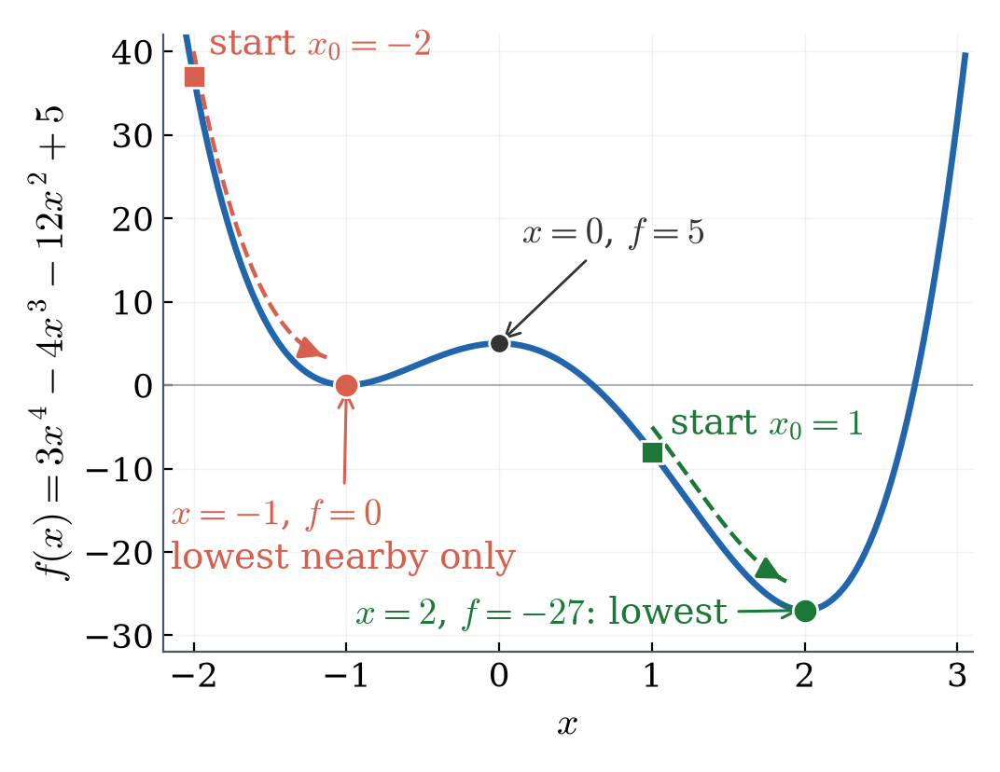
Not our data — a one-variable example:
\[f(x)=3x^4-4x^3-12x^2+5\]- \(f'(x)=12x^3-12x^2-24x=12x(x+1)(x-2)\)
- Flat points: \(x=-1\) (valley), \(0\) (hump), \(2\) (valley)
| start \(x_0\) | \(f'(x_0)\) | downhill | ends in the valley at |
|---|---|---|---|
| \(-2\) | \(-96\) | right | \(-1\), \(f=0\) |
| \(1\) | \(-24\) | right | \(2\), \(f=-27\) |
- At \(-1\) every nearby point is higher, but \(f(2)=-27\) is lower: the wrong valley.
Two kinds of lowest point
In \(f(x)=3x^4-4x^3-12x^2+5\): \(x=-1\) is lowest only among nearby points; \(x=2\) is lowest among all points. We need two words.
- \(\mathbf x^\ast\) is a global minimum if \(f(\mathbf x^\ast)\le f(\mathbf x)\) for every \(\mathbf x\).
- \(\mathbf x^\ast\) is a local minimum if there is a radius \(\varepsilon>0\) with \(f(\mathbf x^\ast)\le f(\mathbf x)\) for every \(\mathbf x\) with \(\norm{\mathbf x-\mathbf x^\ast}<\varepsilon\).
Same \(f\), with \(f(-1)=0\), \(f(2)=-27\):
| point | local minimum? | global minimum? |
|---|---|---|
| \(x=-1\) | yes: nearby values are \(\ge0\) | no: \(f(2)=-27<0\) |
| \(x=2\) | yes | yes |
- Derivatives at a point describe \(f\) only near that point: by themselves they can show a local minimum, not a global one.
What shape has no wrong valley? Look at a chord
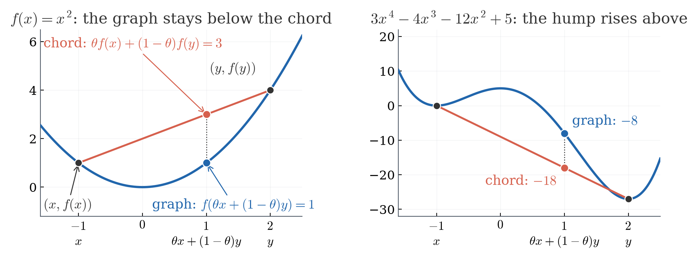
- A chord: the straight segment from \((x,f(x))\) to \((y,f(y))\). Here \(x=-1\), \(y=2\).
- Points between: \(\theta x+(1-\theta)y\) with \(0\le\theta\le1\) (\(\theta=1\): \(x\); \(\theta=0\): \(y\)).
- chord height there: \(\theta f(x)+(1-\theta)f(y)\); graph height: \(f\big(\theta x+(1-\theta)y\big)\)
What fails: at a hump, the graph rises above a chord.
What we need: rule humps out — a function whose graph never rises above a chord.
Name it: the convex function
- Left side: the graph between \(\mathbf x\) and \(\mathbf y\). Right side: the chord.
- In words: the graph never rises above a chord.
- One pair \(\mathbf x,\mathbf y\) and one \(\theta\) that break the inequality are enough to show \(f\) is not convex.
- The points \(\theta\mathbf x+(1-\theta)\mathbf y\) must lie where \(f\) is defined: a convex set (MML Def. 7.2, p.236), one that contains the segment between any two of its points. Every domain here is \(\R^D\), which is convex.
The definition at work: \(x=-1\), \(y=2\), \(\theta=\tfrac13\)
Definition: \(f\big(\theta x+(1-\theta)y\big)\le\theta f(x)+(1-\theta)f(y)\). The point is \(\tfrac13(-1)+\tfrac23(2)=1\).
| function | graph \(f(1)\) | chord \(\tfrac13f(-1)+\tfrac23f(2)\) | graph \(\le\) chord? |
|---|---|---|---|
| \(x^2\) | \(1\) | \(\tfrac13\cdot1+\tfrac23\cdot4=3\) | \(1\le3\) ✓ |
| \(3x^4-4x^3-12x^2+5\) | \(-8\) | \(\tfrac13\cdot0+\tfrac23\cdot(-27)=-18\) | \(-8\le-18\) ✗ |
- The two-valley \(f\) is not convex: one failure settles it.
- For \(x^2\), one success proves nothing: convex needs every \(x,y,\theta\).
A test for one variable: \(f''\ge0\)
For a smooth one-variable curve, “never above a chord” is exactly bending upward everywhere, and \(f''\) measures the bending:
| function | \(f''(x)\) | convex? |
|---|---|---|
| \(x^2\) | \(2\ge0\) | yes |
| \(3x^2-5x+2\) (MML Figure 7.7, p.237) | \(6\ge0\) | yes |
| \(3x^4-4x^3-12x^2+5\) | \(36x^2-24x-24\); at \(0\): \(-24<0\) | no |
- \(f''<0\) near the hump: the graph bends down there.
Why \(f''\ge0\) gives convex: the slope never goes down
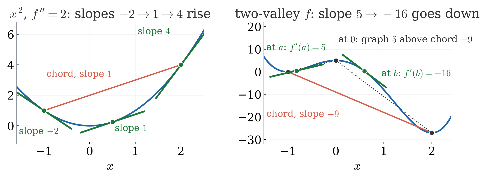
| function | chord slope | slopes along the graph, left to right | graph vs chord |
|---|---|---|---|
| \(x^2\), \(f''=2\) | \(1\) | \(-2,\ 1,\ 4\): rise | below |
| \(3x^4-4x^3-12x^2+5\) | \(-9\) | \(5\) (from \((-1,0)\) to \((0,5)\)), then \(-16\) (to \((2,-27)\)): go down | above at \(0\) |
Proof, setup: subtract the chord
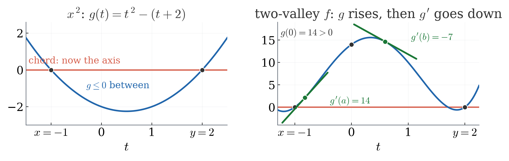
- Assume: \(f''(t)\ge0\) for every \(t\).
- To prove: \(f\) is convex: for any \(x<y\) and \(z=\theta x+(1-\theta)y\) between them, \(f(z)\le\theta f(x)+(1-\theta)f(y)\).
- The chord from \((x,f(x))\) to \((y,f(y))\): \(L(t)=f(x)+m(t-x)\), slope \(m=\frac{f(y)-f(x)}{y-x}\). At \(z\): \(L(z)=\theta f(x)+(1-\theta)f(y)\), the right side.
- Subtract it: \(g(t)=f(t)-L(t)\), how far the graph is above the chord.
| fact about \(g\) | why |
|---|---|
| \(g(x)=0,\ g(y)=0\) | the chord meets the graph at both ends |
| \(g''=f''\ge0\), so \(g'\) never decreases | \(L\) is a line: \(L''=0\) |
| goal: \(g(z)\le0\) for every \(z\) between \(x\) and \(y\) | \(g(z)\le0\iff f(z)\le L(z)\) |
Proof: \(g\) cannot rise above \(0\) and come back
From the setup: \(g=f-L\), \(\;g(x)=g(y)=0\), \(\;g'\) never decreases. Goal: \(g(z)\le0\) for \(x<z<y\).
Proof by contradiction.
- Suppose \(g(z)>0\) at some \(z\) between \(x\) and \(y\).
- Mean Value Theorem on \([x,z]\): some \(a\) with \(x<a<z\) has \(g'(a)=\frac{g(z)-g(x)}{z-x}=\frac{g(z)}{z-x}>0\).
- Slope never decreases: \(g'(t)\ge g'(a)>0\) for every \(t\ge a\). So \(g\) is increasing from \(z\) to \(y\).
- Contradiction: \(g(y)>g(z)>0\), but \(g(y)=0\).
- So \(g(z)\le0\), that is \(f(z)\le\theta f(x)+(1-\theta)f(y)\), for every chord: \(f\) is convex.
- The other direction, convex \(\Rightarrow f''\ge0\), is also true (MML p.237); we use it without proof. [UNDERSTAND]
Theorem: for a convex function, local means global
Back to the lecture question: on a convex function, can a local minimum be the wrong valley?
- No derivatives are needed: only the chord inequality.
- Any number of variables \(D\).
- The two-valley \(f\) is not convex, so the theorem says nothing about it — and indeed \(x=-1\) is local, not global.
Proof, setup: what we assume, what we prove
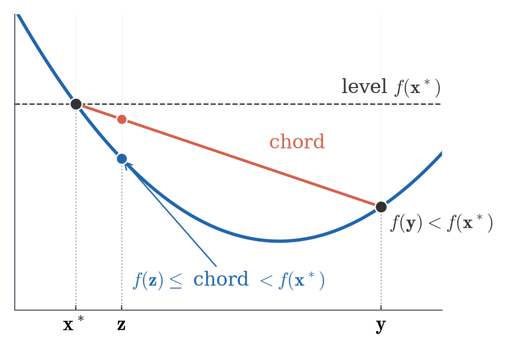
- Assume (C): \(f\) is convex: for all \(\mathbf x,\mathbf y\) and \(0\le\theta\le1\),
\(f\big(\theta\mathbf x+(1-\theta)\mathbf y\big)\le\theta f(\mathbf x)+(1-\theta)f(\mathbf y)\). - Assume (L): \(\mathbf x^\ast\) is a local minimum: there is a radius \(\varepsilon>0\) with \(f(\mathbf x^\ast)\le f(\mathbf x)\) for every \(\mathbf x\) with \(\norm{\mathbf x-\mathbf x^\ast}<\varepsilon\).
- To prove: \(\mathbf x^\ast\) is a global minimum: \(f(\mathbf x^\ast)\le f(\mathbf y)\) for every \(\mathbf y\).
Method: contradiction.
- Suppose \(\mathbf x^\ast\) is not a global minimum: some \(\mathbf y\) is lower, \(f(\mathbf y)<f(\mathbf x^\ast)\).
- Walk from \(\mathbf x^\ast\) toward \(\mathbf y\). By (C) the graph stays under the chord, and the chord goes down toward \(\mathbf y\).
- So points right next to \(\mathbf x^\ast\) are already lower than \(\mathbf x^\ast\): inside the radius \(\varepsilon\), against (L).
Proof: a lower point anywhere means a lower point nearby
(C): \(f\big(\theta\mathbf x+(1-\theta)\mathbf y\big)\le\theta f(\mathbf x)+(1-\theta)f(\mathbf y)\). (L): \(f(\mathbf x^\ast)\le f(\mathbf x)\) whenever \(\norm{\mathbf x-\mathbf x^\ast}<\varepsilon\).
- Suppose some \(\mathbf y\) has \(f(\mathbf y)<f(\mathbf x^\ast)\). Then \(\mathbf y\ne\mathbf x^\ast\).
- Points between: \(\mathbf z=\theta\mathbf y+(1-\theta)\mathbf x^\ast\), with \(0<\theta\le1\) (\(\theta\to0\): next to \(\mathbf x^\ast\); \(\theta=1\): \(\mathbf y\)).
- (C) with the pair \(\mathbf y,\mathbf x^\ast\): \[\begin{aligned}f(\mathbf z)&\le\theta f(\mathbf y)+(1-\theta)f(\mathbf x^\ast)\\&=f(\mathbf x^\ast)+\theta\big(f(\mathbf y)-f(\mathbf x^\ast)\big)\;<\;f(\mathbf x^\ast),\end{aligned}\] since \(\theta>0\) and \(f(\mathbf y)-f(\mathbf x^\ast)<0\). every such \(\mathbf z\) is lower than \(\mathbf x^\ast\).
- How close: \(\norm{\mathbf z-\mathbf x^\ast}=\theta\norm{\mathbf y-\mathbf x^\ast}\), which shrinks to \(0\) as \(\theta\to0\). Whatever the radius \(\varepsilon\) in (L), take \(\theta<\varepsilon/\norm{\mathbf y-\mathbf x^\ast}\) (and \(\theta\le1\)): then \(\norm{\mathbf z-\mathbf x^\ast}<\varepsilon\).
- Contradiction with (L): this \(\mathbf z\) is within \(\varepsilon\) of \(\mathbf x^\ast\), yet \(f(\mathbf z)<f(\mathbf x^\ast)\).
So no lower \(\mathbf y\) exists: \(\mathbf x^\ast\) is a global minimum.
For a differentiable convex function, a flat point is a global minimum
Setting \(\nabla f=\mathbf 0^\top\) finds flat points, and a flat point need not be a local minimum, so the local \(\Rightarrow\) global theorem does not cover it. We argue directly.
- One variable, \(f\) convex and twice differentiable: \(f''\ge0\), so the slope \(f'\) never decreases.
- Flat point \(x^\ast\): \(f'(x^\ast)=0\). So \(f'\le0\) left of \(x^\ast\), \(f'\ge0\) right of it.
- \(f\) falls all the way to \(x^\ast\), then rises: \(x^\ast\) is a global minimum.
- Several variables (MML eq. (7.31), p.237): a differentiable \(f\) is convex exactly when its graph lies above every tangent plane, \[f(\mathbf y)\;\ge\;f(\mathbf x)+\nabla f(\mathbf x)(\mathbf y-\mathbf x)\quad\text{for all }\mathbf x,\mathbf y.\]
- At a flat point \(\nabla f(\mathbf x^\ast)=\mathbf 0^\top\): \(f(\mathbf y)\ge f(\mathbf x^\ast)\) for every \(\mathbf y\). A global minimum.
What convexity does not promise:
- That a lowest point exists: \(e^x\) is convex (\(f''=e^x>0\)), but \(f'=e^x\) is never \(0\) and there is no minimum.
- That our steps reach the bottom: a step that is too big can overshoot, even on \(x^2\). That is L16.
Our \(\mathrm{SSE}\): two variables. Restrict to a line
\(\mathrm{SSE}(w_0,w_1)=3w_0^2+6w_0w_1+5w_1^2-12w_0-14w_1+14\).
- L11’s idea: on the line of points \(\mathbf w+h\mathbf u\), the error is a function of one number \(h\): \[\phi(h)=\mathrm{SSE}(\mathbf w+h\mathbf u).\]
- The definition of convex compares \(f\) only at points of one segment, and a segment lies on one line.
- So: \(f\) is convex \(\iff\) every \(\phi\) is convex, for every point \(\mathbf w\) and every direction \(\mathbf u\). [MASTER]
- Plan for \(\mathrm{SSE}\): show that every slice bends upward, \(\phi''(h)\ge0\). Then the whole surface is convex.
Every slice of \(\mathrm{SSE}\) opens upward
\(\mathrm{SSE}(\mathbf w)=\norm{\mathbf y-X\mathbf w}^2\), residual \(\mathbf r=\mathbf y-X\mathbf w\), slice \(\phi(h)=\mathrm{SSE}(\mathbf w+h\mathbf u)\).
- \(\mathbf y-X(\mathbf w+h\mathbf u)=\mathbf r-h\,X\mathbf u\) — the predictions move by \(h\,X\mathbf u\)
- \(\phi(h)=\norm{\mathbf r-hX\mathbf u}^2=\lVert\mathbf r\rVert^2-2h\,\mathbf r^\top X\mathbf u+h^2\norm{X\mathbf u}^2\) — expand the square
- \(\phi''(h)=2\norm{X\mathbf u}^2\ge0\) — a squared length
- Check, our data: \(X=\left[\begin{smallmatrix}1&0\\1&1\\1&2\end{smallmatrix}\right]\), \(\mathbf u=(1,0)^\top\): \(2\norm{X\mathbf u}^2=2\cdot3=6\), the \(\phi''\) of L11’s slice \(3h^2-12h+14\).
- Every slice is convex, so \(\mathrm{SSE}\) is convex — for every dataset \(X,\mathbf y\). [MASTER]
- The theorem applies: any local minimum of \(\mathrm{SSE}\) is a global minimum.
Convexity is the general reason behind L10
Slice: \(\phi(h)=\lVert\mathbf r\rVert^2-2h\,\mathbf r^\top X\mathbf u+h^2\norm{X\mathbf u}^2\). Take the slices through \(\mathbf w^\ast=\left(\tfrac32,\tfrac12\right)^\top\), \(\mathbf r^\ast=\mathbf y-X\mathbf w^\ast\).
- Flat point: \(X^\top\mathbf r^\ast=\mathbf 0\) (L10, Step 2), so the middle term is \(0\).
- Every slice through \(\mathbf w^\ast\): \(\;\phi(h)=\tfrac32+h^2\norm{X\mathbf u}^2\ge\tfrac32\).
- That is L10’s Pythagoras identity \(\mathrm{SSE}(\mathbf w)=\tfrac32+\norm{X(\mathbf w-\mathbf w^\ast)}^2\), read along one line.
| L10 showed | L15 explains |
|---|---|
| this flat point is lowest, by Pythagoras | \(\mathrm{SSE}\) is convex, for every dataset |
| for least squares only | for every convex error: local \(\Rightarrow\) global |
- Answer for \(\mathrm{SSE}\): no wrong valley. Its flat point \(\mathbf w^\ast\) is the lowest point, \(\mathrm{SSE}(\mathbf w^\ast)=\tfrac32\).
A minimal two-layer linear model
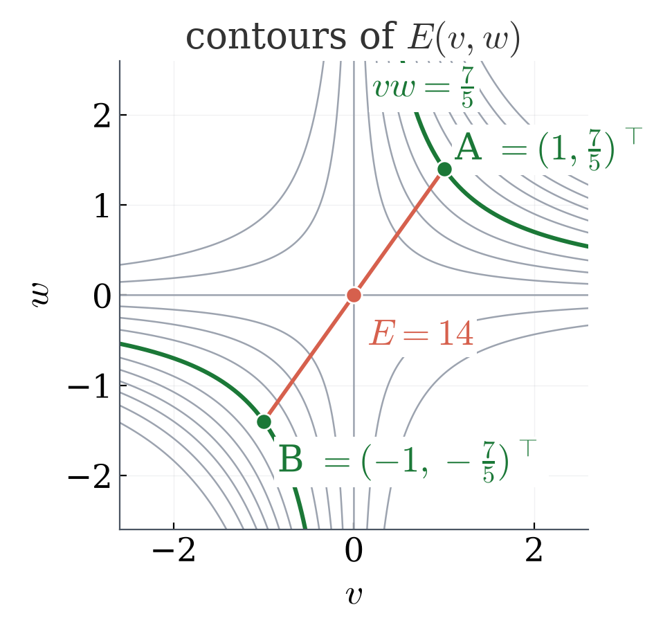
Our data \(\mathbf t=(0,1,2)^\top\), \(\mathbf y=(1,3,2)^\top\).
| model | error | |
|---|---|---|
| one layer (L09) | \(\hat y=w\,t\) | \(5w^2-14w+14\): convex (second derivative \(10\)) |
| two layers | \(\hat y=v\,(w\,t)\) | \(E(v,w)=5(vw)^2-14vw+14\): ? |
- Layer 1 multiplies by \(w\), layer 2 by \(v\). No nonlinear function yet.
- The predictions depend only on the product \(vw\).
- L09: the best product is \(\tfrac75\), with error \(\tfrac{21}{5}\).
- So \(E\) is lowest, \(\tfrac{21}{5}\), on the whole curve \(vw=\tfrac75\): two separate branches (green).
Two layers: not convex, and a flat point that is not lowest
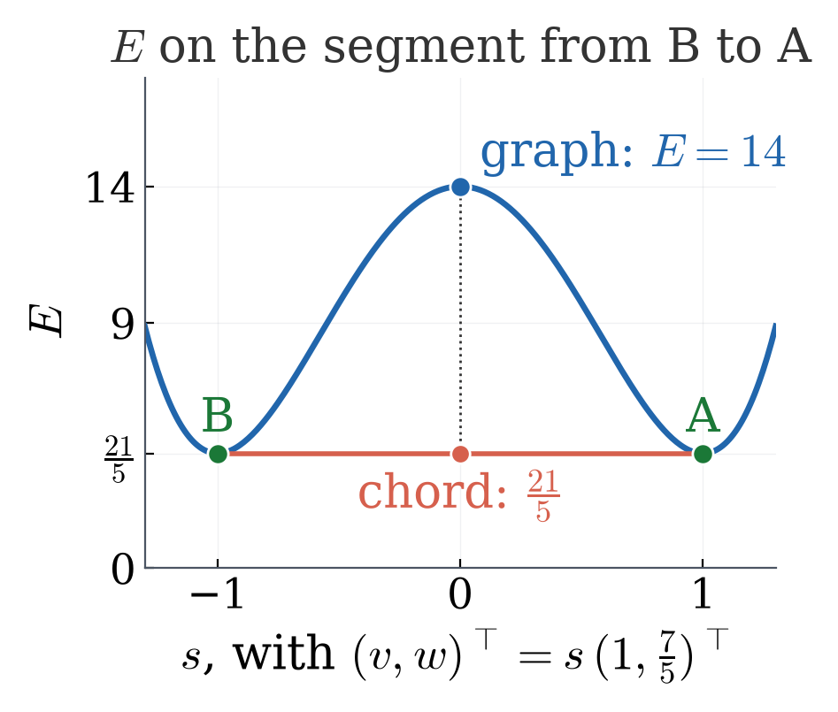
\(E(v,w)=5(vw)^2-14vw+14\): lowest, \(\tfrac{21}{5}\), at \(A=\left(1,\tfrac75\right)^\top\) and \(B=\left(-1,-\tfrac75\right)^\top\).
- Chord test, \(\theta=\tfrac12\), midpoint \((0,0)^\top\):
- graph \(E(0,0)=14\); chord \(\tfrac12\cdot\tfrac{21}5+\tfrac12\cdot\tfrac{21}5=\tfrac{21}{5}\)
- \(14\le\tfrac{21}{5}\) ✗ — not convex
- Flat: \(\partial E/\partial v=10vw^2-14w\) and \(\partial E/\partial w=10v^2w-14v\) are both \(0\) at \((0,0)^\top\).
- Not lowest: \(E(0,0)=14>\tfrac{21}{5}\). Toward \(A\) the error drops at once: not even a local minimum.
- Why: \((v,w)\to(-v,-w)\) keeps \(vw\) and the predictions: two lowest branches.
Neural networks: errors that are not convex
- A neural network is a long chain of layers (L13). Its training error is generally nonconvex in the weights; even our two-layer example is already nonconvex. [UNDERSTAND]
- Many separate lowest points (flipping signs, or swapping two units, keeps the predictions).
- Flat points that are not lowest, like \((0,0)^\top\) above.
- So the theorem does not apply: a local minimum of a network’s error need not be global.
- Different starting weights can lead training to different final weights.
- In practice, large networks still reach low errors; why this works so well is an active research question. [EXPLORE]
L15 takeaways (1 of 2): convex functions
- Local minimum: lowest nearby. Global minimum: lowest everywhere. Derivatives see only nearby. [MASTER]
- Convex (MML Def. 7.3): \(f\big(\theta\mathbf x+(1-\theta)\mathbf y\big)\le\theta f(\mathbf x)+(1-\theta)f(\mathbf y)\), \(0\le\theta\le1\). [MASTER]
- The graph never rises above a chord.
- One variable: convex \(\iff f''\ge0\) everywhere. [MASTER]
- Several variables: convex \(\iff\) every line slice \(\phi(h)=f(\mathbf w+h\mathbf u)\) is convex. [MASTER]
L15 takeaways (2 of 2): what convexity buys
- Theorem: for a convex function, every local minimum is a global minimum: no wrong valleys. [MASTER]
- \(\mathrm{SSE}=\norm{\mathbf y-X\mathbf w}^2\) is convex for every dataset: every slice has \(\phi''=2\norm{X\mathbf u}^2\ge0\). [MASTER]
- Differentiable convex \(f\): a flat point, \(\nabla f(\mathbf x^\ast)=\mathbf 0^\top\), is a global minimum, since \(f(\mathbf y)\ge f(\mathbf x^\ast)+\nabla f(\mathbf x^\ast)(\mathbf y-\mathbf x^\ast)\) (MML (7.31)). [MASTER]
- So the flat point of our \(\mathrm{SSE}\), \(\mathbf w^\ast=\left(\tfrac32,\tfrac12\right)^\top\), is the lowest point: \(\mathrm{SSE}(\mathbf w^\ast)=\tfrac32\).
- Not promised: that a minimum exists (\(e^x\) has none), or that our steps reach it (L16).
- Not convex: \(3x^4-4x^3-12x^2+5\) (\(-1\) local, not global), the two-layer \(E(v,w)\) (flat at \((0,0)^\top\), not lowest), neural networks. [UNDERSTAND]
L16 — Gradient Descent and Step Size
Reading (MML):
- Ch. 7 opening, pp.226–227: from “In general, we are unable to find analytic solutions” to “(this is called the step-size)”
- §7.1, p.228: eqs. (7.5) and (7.6); Example 7.1 and Figure 7.3, pp.228–229
- §7.1.1 Step-size, p.229
- §7.1, Example 7.2, p.230: gradient descent for a squared error
The plan:
- The loop: step downhill, recompute, step again — gradient descent
- The step size on \(f(w)=w^2\): too small, good, too large
- Gradient descent on our \(\mathrm{SSE}\)
- Solve once, or iterate: why big models iterate
The question: how do we walk downhill, step by step?
Data \(\mathbf t=(0,1,2)^\top\) hours, \(\mathbf y=(1,3,2)^\top\) points; model \(\hat y=w_0+w_1t\); error
\[\mathrm{SSE}=3w_0^2+6w_0w_1+5w_1^2-12w_0-14w_1+14\]- L11: at any \(\mathbf w\), the fastest way down is \(-\big(\nabla\mathrm{SSE}(\mathbf w)\big)^\top\) (steepest descent).
- L15: \(\mathrm{SSE}\) is convex, so it has no wrong valley: its flat point \(\mathbf w^\ast=\left(\tfrac32,\tfrac12\right)^\top\) is the lowest point, \(\mathrm{SSE}=\tfrac32\).
- Whether our steps actually reach \(\mathbf w^\ast\) depends on how we step: today.
L11: one walk along the steepest direction is not enough

From \((0,0)^\top\), L11 walked along \(-(\nabla\mathrm{SSE})^\top=(12,14)^\top\): the line \(\mathbf w=s\,(6,7)^\top\).
| \(s\) | \(\mathrm{SSE}\) | |
|---|---|---|
| \(0\) | \(14\) | the start |
| \(\tfrac{17}{121}\) | \(2.06\) | lowest on the line |
| \(\tfrac{34}{121}\) | \(14\) | the start’s error again |
| \(\tfrac{51}{121}\) | \(49.8\) | worse than the start |
- Best on the line: \(2.06>\tfrac32\). One step is not enough.
- Too far in a good direction: the error goes up (overshooting).
What fails: after we move, that direction changes; one arrow is not a training method.
What we need: a rule we can repeat.
The idea on the simplest bowl, \(f(w)=w^2\)
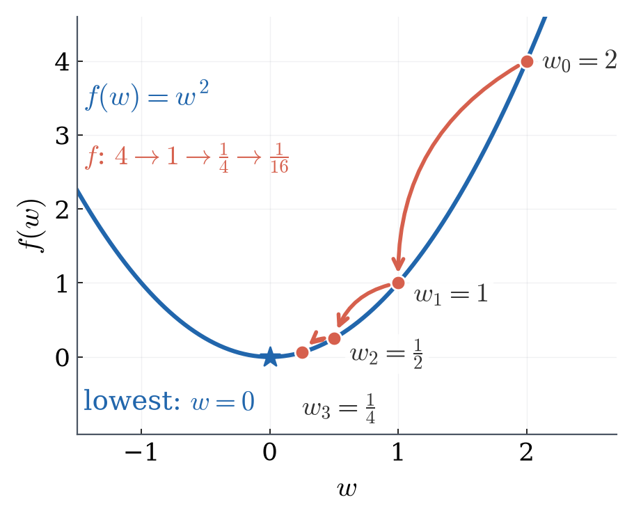
- A repeated update is easiest to see in one variable: every step can be drawn and computed exactly. Not our data: the same rule comes back to our \(\mathrm{SSE}\).
- Lowest point \(w=0\); slope \(f'(w)=2w\). Start \(w_0=2\).
- Repeat: find the slope here, step against it by \(\tfrac14\) of it.
| \(k\) | \(w_k\) | slope \(f'(w_k)\) | step \(-\tfrac14f'(w_k)\) | \(w_{k+1}\) | \(f(w_{k+1})\) |
|---|---|---|---|---|---|
| \(0\) | \(2\) | \(4\) | \(-1\) (left) | \(1\) | \(1\) |
| \(1\) | \(1\) | \(2\) (recomputed) | \(-\tfrac12\) | \(\tfrac12\) | \(\tfrac14\) |
| \(2\) | \(\tfrac12\) | \(1\) (recomputed) | \(-\tfrac14\) | \(\tfrac14\) | \(\tfrac1{16}\) |
- Slope positive \(\Rightarrow\) step left. Flatter slope \(\Rightarrow\) shorter step.
Gradient descent
The loop “recompute the slope, step against it, repeat”, written for any number of parameters:
- One parameter: \((\nabla f)^\top=f'(w)\), so \(w_{k+1}=w_k-\gamma\,f'(w_k)\).
- \(f(w)=w^2\), \(\gamma=\tfrac14\), \(w_0=2\): \(\;2\to1\to\tfrac12\to\tfrac14\).
- The transpose: the gradient is a row, \(\mathbf w\) is a column (MML p.228, margin).
- MML writes \(\mathbf x_i\) and \(\gamma_i\): the step-size may change from step to step. Today \(\gamma\) is fixed.
Reading the update, piece by piece
\[\mathbf w_{k+1}=\mathbf w_k-\gamma\,\big(\nabla f(\mathbf w_k)\big)^\top\]| piece | what it is |
|---|---|
| \(\mathbf w_k\) | where we stand after \(k\) steps |
| \(\nabla f(\mathbf w_k)\) | the row of partial derivatives at \(\mathbf w_k\), recomputed every step |
| \(-\big(\nabla f(\mathbf w_k)\big)^\top\) | the steepest way down at \(\mathbf w_k\) (L11) |
| \(\gamma\) | how far to go along it |
- Step length \(=\gamma\,\norm{\nabla f(\mathbf w_k)}\): steps shorten as the slope flattens.
- If \(\nabla f(\mathbf w_k)=\mathbf 0\), then \(\mathbf w_{k+1}=\mathbf w_k\): gradient descent stops only at a flat point.
Why a small step lowers the error
- L09, L11: a small step \(\mathbf h\) from \(\mathbf w\) changes \(f\) by about \(\nabla f(\mathbf w)\,\mathbf h\) (row times column).
- Gradient descent takes \(\mathbf h=-\gamma\big(\nabla f(\mathbf w)\big)^\top\):
- If \(\nabla f(\mathbf w)\neq\mathbf 0\): a decrease of about \(\gamma\norm{\nabla f(\mathbf w)}^2\).
- MML (7.5), p.228: for a small step-size, \(f(\mathbf x_1)\le f(\mathbf x_0)\). [UNDERSTAND]
The first step on our SSE: the prediction holds only for small \(\gamma\)
\(\mathrm{SSE}=3w_0^2+6w_0w_1+5w_1^2-12w_0-14w_1+14\); at \((0,0)^\top\): \(\nabla\mathrm{SSE}=\begin{bmatrix}-12&-14\end{bmatrix}\), \(\norm{\nabla\mathrm{SSE}}^2=340\).
| \(\gamma\) | \(\mathbf w_1=\gamma\,(12,14)^\top\) | predicted \(14-340\gamma\) | actual \(\mathrm{SSE}(\mathbf w_1)\) |
|---|---|---|---|
| \(0.01\) | \((0.12,\,0.14)^\top\) | \(10.6\) | \(10.842\) |
| \(0.02\) | \((0.24,\,0.28)^\top\) | \(7.2\) | \(8.168\) |
| \(0.05\) | \((0.6,\,0.7)^\top\) | \(-3\) | \(3.05\) |
| \(0.1\) | \((1.2,\,1.4)^\top\) | \(-20\) | \(4.2\) |
- Small \(\gamma\): prediction close to the actual error.
- Larger \(\gamma\): prediction negative — impossible, a sum of squares is \(\ge0\).
Step size on \(f(w)=w^2\): four choices
A separate example, not our data. Start \(w_0=2\); update \(w_{k+1}=w_k-\gamma\cdot2w_k\).
| \(\gamma\) | \(w_1\) | \(w_2\) | \(w_3\) | what happens |
|---|---|---|---|---|
| \(0.05\) | \(1.8\) | \(1.62\) | \(1.458\) | creeps toward \(0\): slow |
| \(0.25\) | \(1\) | \(0.5\) | \(0.25\) | halves every step |
| \(0.75\) | \(-1\) | \(0.5\) | \(-0.25\) | jumps past \(0\), still shrinks |
| \(1.1\) | \(-2.4\) | \(2.88\) | \(-3.456\) | jumps past \(0\) and grows |
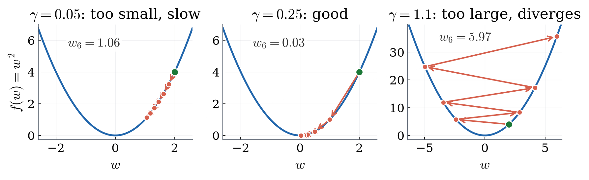
- MML §7.1.1, p.229: too small \(\Rightarrow\) slow; too large \(\Rightarrow\) overshoot, fail to converge, or diverge.
Why: every step multiplies \(w\) by the same number
\(f(w)=w^2\), \(\;f'(w)=2w\), \(\;w_{k+1}=w_k-\gamma\,f'(w_k)\).
- \(w_{k+1}=w_k-\gamma\cdot2w_k\) — put in \(f'\)
- \(w_{k+1}=(1-2\gamma)\,w_k\) — factor out \(w_k\)
- \(w_k=(1-2\gamma)^k\,w_0\) — repeat \(k\) times
| \(\gamma\) | factor \(1-2\gamma\) | each step |
|---|---|---|
| \(0.05\) | \(0.9\) | shrinks by only \(10\%\): slow |
| \(0.25\) | \(0.5\) | halves |
| \(0.5\) | \(0\) | lands on \(0\) in one step |
| \(0.75\) | \(-0.5\) | flips sign, halves |
| \(1\) | \(-1\) | \(2,-2,2,-2,\dots\): never settles |
| \(1.1\) | \(-1.2\) | flips sign, grows by \(20\%\): diverges |
Theorem: the step sizes that work on \(f(w)=w^2\)
Proof
- \(w_k=(1-2\gamma)^k\,w_0\) — the update \(w_{k+1}=(1-2\gamma)\,w_k\), repeated
- If \(|1-2\gamma|<1\): \(|w_k|=|1-2\gamma|^k\,|w_0|\to0\)
- If \(|1-2\gamma|\ge1\): \(|w_k|\ge|w_0|>0\) for every \(k\), so \(w_k\not\to0\)
- \(|1-2\gamma|<1\iff-1<1-2\gamma<1\iff0<\gamma<1\)
- Overshooting (sign flips) means \(1-2\gamma<0\), i.e. \(\gamma>\tfrac12\): it still converges while \(\gamma<1\).
Your turn: predict three step sizes on \(f(w)=w^2\)
Without iterating, predict for each \(\gamma\): creeps slowly to \(0\), zigzags across \(0\), or diverges? Justify in one line.
- (a) \(\gamma=0.1\) (b) \(\gamma=0.9\) (c) \(\gamma=1.2\)
- (d) Two of the three shrink \(|w_k|\) at the same rate. Which two?
| factor \(1-2\gamma\) | \(w_0,w_1,w_2,\dots\) | prediction | |
|---|---|---|---|
| (a) \(\gamma=0.1\) | \(0.8\) | \(2,\ 1.6,\ 1.28,\dots\) | same sign, \(|w|\) shrinks by \(20\%\): creeps, slow |
| (b) \(\gamma=0.9\) | \(-0.8\) | \(2,\ {-1.6},\ 1.28,\dots\) | sign flips, \(|w|\) shrinks by \(20\%\): zigzags, converges (\(\gamma<1\)) |
| (c) \(\gamma=1.2\) | \(-1.4\) | \(2,\ {-2.8},\ 3.92,\dots\) | sign flips, \(|w|\) grows by \(40\%\): diverges (\(\gamma\ge1\)) |
- (d) (a) and (b): \(|1-2\gamma|=0.8\) for both. Jumping past \(0\) is not the problem; the size of \(|1-2\gamma|\) is.
- Choosing \(\gamma\) in practice (MML §7.1.1, p.229): error went up \(\Rightarrow\) undo the step, decrease \(\gamma\); error went down \(\Rightarrow\) try a larger \(\gamma\). Searching for the best \(\gamma\) along the line at every step is called line search. [EXPLORE]
Back to our SSE: two steps by hand, \(\gamma=0.1\)
The same loop on our data: two steps by hand, to see the direction change.
- \(\mathrm{SSE}=3w_0^2+6w_0w_1+5w_1^2-12w_0-14w_1+14\)
- \(\nabla\mathrm{SSE}=\begin{bmatrix}6w_0+6w_1-12&6w_0+10w_1-14\end{bmatrix}\)
- Update: \(\mathbf w_{k+1}=\mathbf w_k-0.1\,\big(\nabla\mathrm{SSE}(\mathbf w_k)\big)^\top\), start \(\mathbf w_0=(0,0)^\top\).
| \(k\) | \(\mathbf w_k\) | \(\nabla\mathrm{SSE}(\mathbf w_k)\) | \(\mathbf w_{k+1}=\mathbf w_k-0.1\,(\nabla\mathrm{SSE})^\top\) |
|---|---|---|---|
| \(0\) | \((0,0)^\top\) | \(\begin{bmatrix}-12&-14\end{bmatrix}\) | \((1.2,\,1.4)^\top\) |
| \(1\) | \((1.2,\,1.4)^\top\) | \(\begin{bmatrix}3.6&7.2\end{bmatrix}\) | \((0.84,\,0.68)^\top\) |
- \(\mathrm{SSE}\): \(14\to4.2\to2.256\).
- Step 2 changes direction: the gradient was recomputed at \(\mathbf w_1\).
The path on the contour map
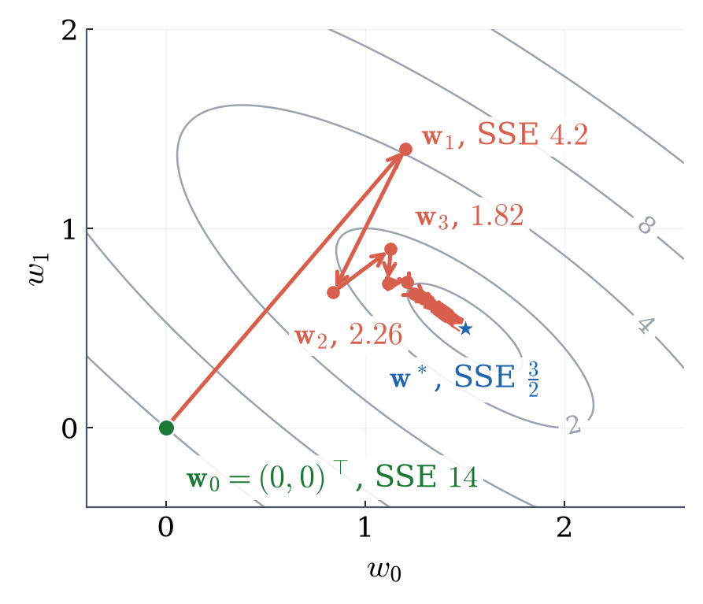
- Gradient descent on our \(\mathrm{SSE}\), \(\gamma=0.1\), from \((0,0)^\top\): all the steps, not just the first two.
- Green: the start \((0,0)^\top\), \(\mathrm{SSE}=14\).
Blue star: \(\mathbf w^\ast\), \(\mathrm{SSE}=\tfrac32\). - Each step crosses to lower contours:
\(14\to4.2\to2.26\to1.82\to\cdots\) - Each step leaves its point at a right angle to the contour there (L11).
- The path zigzags: the fastest way down does not point at \(\mathbf w^\ast\) (L11). Why, and how to reduce it: L19.
- After 50 steps: \(\mathbf w_{50}=(1.49992,\,0.50006)^\top\), \(\mathbf w^\ast\) to three decimals. [MASTER]
Three step sizes on our SSE, from \((0,0)^\top\)
Does the \(f(w)=w^2\) lesson (too small, good, too large) hold on our data? \(\mathbf w_{k+1}=\mathbf w_k-\gamma\,\big(\nabla\mathrm{SSE}(\mathbf w_k)\big)^\top\). Green: start, \(\mathrm{SSE}=14\). Blue star: \(\mathbf w^\ast\), lowest \(\mathrm{SSE}=\tfrac32\).
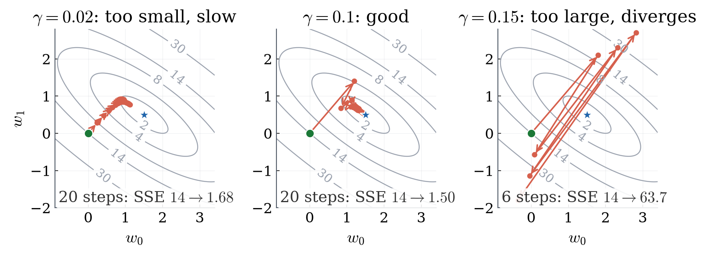
| \(\gamma\) | \(\mathrm{SSE}\) after 1 step | after 5 | after 20 | |
|---|---|---|---|---|
| \(0.02\) | \(8.168\) | \(2.412\) | \(1.683\) | slow |
| \(0.1\) | \(4.2\) | \(1.617\) | \(1.5005\) | good |
| \(0.15\) | \(17.45\) | \(48.67\) | \(3017\) | diverges |
- The same three behaviours as on \(f(w)=w^2\). The limit (between \(0.1\) and \(0.15\)) comes from \(X^\top X\): L19.
Where gradient descent stops: the normal equation
Data \(\mathbf y=(1,3,2)^\top\), \(X=\left[\begin{smallmatrix}1&0\\1&1\\1&2\end{smallmatrix}\right]\), residual \(\mathbf r=\mathbf y-X\mathbf w\), \(\;\nabla\mathrm{SSE}=-2\,\mathbf r^\top X\) (L12).
If the iterates converge, \(\mathbf w_k\to\mathbf w_\infty\):
- \(\mathbf w_\infty=\mathbf w_\infty-\gamma\big(\nabla\mathrm{SSE}(\mathbf w_\infty)\big)^\top\) — let \(k\to\infty\) in the update: it no longer changes \(\mathbf w_\infty\)
- \(\nabla\mathrm{SSE}(\mathbf w_\infty)=\mathbf 0^\top\) — subtract \(\mathbf w_\infty\), divide by \(-\gamma\neq0\)
- \(-2\,\mathbf r^\top X=\mathbf 0^\top\iff X^\top(\mathbf y-X\mathbf w_\infty)=\mathbf 0\) — transpose, divide by \(-2\)
- \(\iff X^\top X\mathbf w_\infty=X^\top\mathbf y\) — the normal equation (Unit 2, L12)
- Our data: \(\begin{bmatrix}3&3\\3&5\end{bmatrix}\mathbf w=\begin{bmatrix}6\\7\end{bmatrix}\Rightarrow\mathbf w_\infty=\mathbf w^\ast=\left(\tfrac32,\tfrac12\right)^\top\). With \(\gamma=0.1\), 50 steps: \((1.49992,\,0.50006)^\top\).
- With \(\gamma=0.15\) the iterates diverge: no \(\mathbf w_\infty\), and the argument says nothing.
- MML Example 7.2, p.230: the same squared error.
- Gradient descent works; but here “there is an analytic solution”: set the gradient to zero.
Two ways to the same \(\mathbf w^\ast\): solve once, or iterate
For \(\mathrm{SSE}\): \(-(\nabla\mathrm{SSE})^\top=2X^\top\mathbf r\), so a gradient step is \(\mathbf w_{k+1}=\mathbf w_k+2\gamma\,X^\top\mathbf r_k\), with \(\mathbf r_k=\mathbf y-X\mathbf w_k\).
| normal equation | gradient descent | |
|---|---|---|
| what you do | solve \(X^\top X\mathbf w=X^\top\mathbf y\) once | repeat \(\mathbf w_{k+1}=\mathbf w_k+2\gamma\,X^\top\mathbf r_k\) |
| the answer | exact: \(\left(\tfrac32,\tfrac12\right)^\top\) | approaches it: \((1.49992,\,0.50006)^\top\) after 50 steps |
| what it needs | the \(d\times d\) matrix \(X^\top X\), one linear solve | per step: \(X\mathbf w_k\), \(\mathbf r_k\), \(X^\top\mathbf r_k\) |
| applies to | least squares only | any differentiable error; whether it converges is a separate question (step size: today, L19) |
- \(d\) = number of parameters (here \(d=2\)).
Why big models iterate: no linear equation to solve [UNDERSTAND]
- Least squares: \(\nabla\mathrm{SSE}=\mathbf 0\) is a linear system, \(X^\top X\mathbf w=X^\top\mathbf y\).
- A neural network: layers with nonlinear functions (L13).
- \(\nabla f=\mathbf 0\) is a large system of nonlinear equations.
- MML p.228 assumes exactly this case: “we are unable to analytically find a solution in closed form”.
- Gradient descent needs only \(\nabla f\) at the current point.
- A network’s \(\nabla f\): the chain rule, layer by layer — backpropagation (L13).
L16 takeaways (1/2): gradient descent and the step size
- Gradient descent (MML (7.6), p.228): \(\mathbf w_{k+1}=\mathbf w_k-\gamma\big(\nabla f(\mathbf w_k)\big)^\top\); \(\gamma>0\) the step-size (learning rate). [MASTER]
- Why a loop: one steepest step is not enough, and the direction changes as we move; so recompute the gradient, step against it, repeat.
- One parameter: \(w_{k+1}=w_k-\gamma f'(w_k)\).
- It stops only where \(\nabla f=\mathbf 0^\top\).
- A small step lowers \(f\) by about \(\gamma\norm{\nabla f}^2\) (MML (7.5)). [UNDERSTAND]
- Step-size (MML §7.1.1): too small \(\Rightarrow\) slow; too large \(\Rightarrow\) overshoot, never settle, or diverge. [MASTER]
- \(f(w)=w^2\): \(w_k=(1-2\gamma)^kw_0\); converges \(\iff0<\gamma<1\).
L16 takeaways (2/2): our SSE, and solve versus iterate
- Our \(\mathrm{SSE}\) from \((0,0)^\top\), \(\gamma=0.1\): [MASTER]
- \(\mathrm{SSE}\): \(14\to4.2\to2.256\to\cdots\to\tfrac32\);
- \(\mathbf w_k\to\mathbf w^\ast=\left(\tfrac32,\tfrac12\right)^\top\), along a zigzag path.
- If gradient descent converges, its limit has \(\nabla\mathrm{SSE}=\mathbf 0^\top\): the normal equation \(X^\top X\mathbf w=X^\top\mathbf y\). [MASTER]
- Solve once, or iterate: [UNDERSTAND]
- normal equation: one exact solve, least squares only;
- gradient descent: many cheap steps; can be applied to any differentiable error — why big models iterate;
- whether it converges is a separate question: the step size (today; L19).
L17 — Lagrange Multipliers
Reading:
- MML §7.2, pp.233–236: the constrained problem (7.17), the Lagrangian (7.20), the Remark on equality constraints.
- MML §10.2.1, pp.321–322: eqs. (10.10)–(10.15), the textbook’s proof of Unit 3’s Theorem 2.
- The picture: at the best point, a contour of the objective touches the constraint curve.
- The condition \(\nabla f=\lambda\nabla g\), and the Lagrangian that packages it.
- Warm-up: a linear function on the unit circle.
- Unit 3’s promise: the largest variance is the largest eigenvalue, by calculus.
Unit 3 left a problem with a rule attached
- Unit 3 (L07–L08): four students, two quizzes, covariance matrix \(S=\begin{bmatrix}5&3\\3&5\end{bmatrix}\).
- Variance of the data along a unit direction \(\mathbf u\): \(\;\mathbf u^\top S\mathbf u\).
- PCA wants the direction with the largest variance (MML (10.10), p.322): \[\text{maximize}\quad\mathbf u^\top S\mathbf u\qquad\text{subject to}\quad\norm{\mathbf u}=1 .\]
- Why the rule \(\norm{\mathbf u}=1\): \(\mathbf u=(2,2)^\top\) gives \(\mathbf u^\top S\mathbf u=64\), four times the \(16\) of \((1,1)^\top\). Without the rule, longer \(\mathbf u\) always wins.
- Unit 3 answered with algebra (Theorem 2): largest variance \(8\), along \(\tfrac{1}{\sqrt2}(1,1)^\top\).
Setting the gradient of \(\mathbf u^\top S\mathbf u\) to zero does not find the best unit direction
\(f(\mathbf u)=\mathbf u^\top S\mathbf u\), \(\;S=\begin{bmatrix}5&3\\3&5\end{bmatrix}\). L12, Rule 2: \(\;\nabla f=2\,\mathbf u^\top S\).
| question | answer |
|---|---|
| where is \(\nabla f=\mathbf 0^\top\)? | \(S\mathbf u=\mathbf 0\); \(\det S=16\neq0\), so only \(\mathbf u=\mathbf 0\) |
| does \(\mathbf u=\mathbf 0\) obey the rule? | no: \(\norm{\mathbf 0}=0\neq1\) |
| \(\nabla f\) at Unit 3’s best \(\mathbf u=\tfrac1{\sqrt2}(1,1)^\top\) | \(8\sqrt2\begin{bmatrix}1&1\end{bmatrix}\neq\mathbf 0^\top\) |
- The best point on the circle \(\norm{\mathbf u}=1\) is not a flat point of \(f\).
What fails: the only flat point, \(\mathbf u=\mathbf 0\), is not on the circle.
What we need: a condition for the best point among the points on the circle.
Constrained optimization: the problem and its words
The gap: \(\nabla f=\mathbf 0^\top\) only at \(\mathbf u=\mathbf 0\), off the circle. But \(\mathbf u\) may move only on the unit circle.
| in Unit 3’s problem | the word |
|---|---|
| the points that obey the rule: the unit circle | feasible points |
| the quantity to make largest: \(f(\mathbf u)=\mathbf u^\top S\mathbf u\) | the objective |
| the rule \(\mathbf u^\top\mathbf u=1\), the same as \(\norm{\mathbf u}=1\) | the constraint |
Warm-up: the largest value of \(3x+4y\) on the unit circle
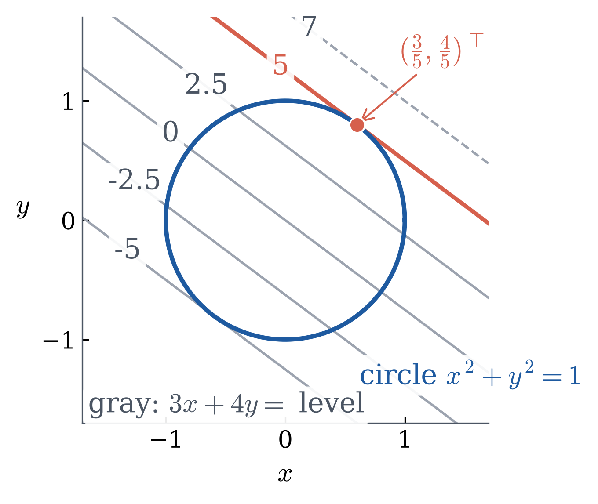
Maximize \(f(x,y)=3x+4y\) subject to \(x^2+y^2=1\).
A separate example, not our data.
- Gray lines: contours of \(f\), the lines \(3x+4y=\text{level}\) (L11).
- Level \(2.5\): the line crosses the circle twice.
Higher levels are still reachable. - Level \(7\) (dashed): the line misses the circle.
No feasible point has \(f=7\). - Level \(5\) (red): the highest level that still meets the circle, at one point \(\left(\tfrac35,\tfrac45\right)^\top\).
At the touching point \(P^\ast\), the two gradients are parallel
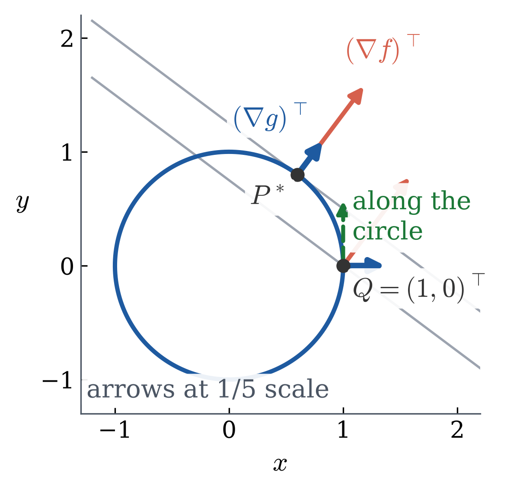
- Objective \(f=3x+4y\): \(\;\nabla f=\begin{bmatrix}3&4\end{bmatrix}\) at every point.
- The circle is the contour \(g=1\) of \(g(x,y)=x^2+y^2\):
\(\nabla g=\begin{bmatrix}2x&2y\end{bmatrix}\).
| point | \(f\) | \(\nabla g\) | \(\nabla f\) vs. \(\nabla g\) |
|---|---|---|---|
| \(Q=(1,0)^\top\) | \(3\) | \(\begin{bmatrix}2&0\end{bmatrix}\) | not parallel |
| \(P^\ast=\left(\tfrac35,\tfrac45\right)^\top\) | \(5\) | \(\begin{bmatrix}\tfrac65&\tfrac85\end{bmatrix}\) | \(\begin{bmatrix}3&4\end{bmatrix}=\tfrac52\begin{bmatrix}\tfrac65&\tfrac85\end{bmatrix}\) |
- In the figure: red \((\nabla f)^\top\) and blue \((\nabla g)^\top\) point the same way at \(P^\ast\), different ways at \(Q\).
At \(Q\) the objective still rises along the circle; at \(P^\ast\) it does not
L11: the slope of \(f\) in a unit direction \(\mathbf t\) is \(\nabla f\,\mathbf t\). Here \(\nabla f=\begin{bmatrix}3&4\end{bmatrix}\).
| point | circle runs along \(\mathbf t\) | slope \(\nabla f\,\mathbf t\) |
|---|---|---|
| \(Q=(1,0)^\top\) | \((0,1)^\top\) (green) | \(4>0\) |
| \(P^\ast=\left(\tfrac35,\tfrac45\right)^\top\) | \(\left(-\tfrac45,\tfrac35\right)^\top\) | \(-\tfrac{12}5+\tfrac{12}5=0\) |
- At \(Q\): walking up the circle raises \(f\). \(Q\) is not the best point.
- At \(P^\ast\): slope \(0\) along the circle, and \(\nabla f\) parallel to \(\nabla g\).
The Lagrange condition
The warm-up picture: at the best point, no direction along the curve improves \(f\), and the two gradients are parallel.
- In the picture: the contour of \(f\) through \(\mathbf x^\ast\) is tangent to the curve \(g=c\).
- Both gradients are rows (L11); the columns \((\nabla f)^\top\) and \((\nabla g)^\top\) point along one line.
- Warm-up: \(\lambda=\tfrac52\) at \(P^\ast=\left(\tfrac35,\tfrac45\right)^\top\).
- The theorem gives candidates: every largest and every smallest point satisfies it.
Proof of the Lagrange condition, for two variables
- To prove: \(\nabla f(\mathbf x^\ast)=\lambda\,\nabla g(\mathbf x^\ast)\) for some number \(\lambda\).
- Fact used (step 0): near \(\mathbf x^\ast\), the points with \(g=c\) form a curve traced by a differentiable path \(\mathbf x(s)\), with \(\mathbf x(0)=\mathbf x^\ast\) and \(\mathbf x'(0)=\mathbf t\neq\mathbf 0\).
- On the unit circle, with \(\mathbf x^\ast=(\cos s_0,\sin s_0)^\top\), we can write the path directly: \(\mathbf x(s)=\big(\cos(s_0+s),\,\sin(s_0+s)\big)^\top\).
- For a general smooth constraint with \(\nabla g(\mathbf x^\ast)\neq\mathbf 0^\top\), that such a path exists is a theorem from later calculus; we use it without proof.
- \(h(s)=f(\mathbf x(s))\) is largest (or smallest) at \(s=0\), so \(h'(0)=0\). — Calculus 1
- \(h'(0)=\nabla f(\mathbf x^\ast)\,\mathbf x'(0)=\nabla f(\mathbf x^\ast)\,\mathbf t=0\), a \((1\times2\text{ row})(2\times1\text{ column})\).
— L14 chain rule: row times the Jacobian of the path \(\mathbf x(s)\) - \(g(\mathbf x(s))=c\) for every \(s\); differentiate: \(\nabla g(\mathbf x^\ast)\,\mathbf t=0\). — same chain rule
- In the plane, the vectors at a right angle to \(\mathbf t\) form one line. Both \((\nabla f)^\top\) and \((\nabla g)^\top\neq\mathbf 0\) lie on it, so \(\nabla f=\lambda\,\nabla g\).
[EXPLORE] With \(d\) variables, steps 1–3 hold for every direction \(\mathbf t\) along the surface \(g=c\), and the same conclusion follows.
The warm-up, solved with the Lagrange condition
Maximize \(3x+4y\) subject to \(x^2+y^2=1\). \(\nabla f=\begin{bmatrix}3&4\end{bmatrix}\), \(\;\nabla g=\begin{bmatrix}2x&2y\end{bmatrix}\).
| (1) first entry | (2) second entry | (3) constraint |
|---|---|---|
| \(3=2\lambda x\) | \(4=2\lambda y\) | \(x^2+y^2=1\) |
- (1), (2): \(x=\tfrac{3}{2\lambda}\), \(\;y=\tfrac{2}{\lambda}\) (\(\lambda\neq0\), since \(3\neq0\)).
- Into (3): \(\tfrac{9}{4\lambda^2}+\tfrac{4}{\lambda^2}=\tfrac{25}{4\lambda^2}=1\), so \(\lambda=\pm\tfrac52\).
| \(\lambda\) | candidate | \(f=3x+4y\) |
|---|---|---|
| \(\tfrac52\) | \(\left(\tfrac35,\tfrac45\right)^\top\) | \(5\), largest |
| \(-\tfrac52\) | \(\left(-\tfrac35,-\tfrac45\right)^\top\) | \(-5\), smallest |
- Same answer as L01’s cosine formula: \(3x+4y=(3,4)^\top\mathbf u=5\cos\theta\) for a unit \(\mathbf u=(x,y)^\top\), between \(-5\) and \(5\).
The Lagrangian: one function whose flat points give both equations
| derivative of \(\mathcal L\) | set to zero | gives |
|---|---|---|
| \(\dfrac{d\mathcal L}{d\mathbf x}=\nabla f-\lambda\,\nabla g\) | \(\mathbf 0^\top\) | \(\nabla f=\lambda\,\nabla g\) |
| \(\dfrac{\partial\mathcal L}{\partial\lambda}=c-g(\mathbf x)\) | \(0\) | \(g(\mathbf x)=c\) |
- As in L12: \(d\) for the whole vector \(\mathbf x\) (a row), \(\partial\) for the single number \(\lambda\).
- Sign: MML §7.2 writes \(f+\lambda h\) with \(h=c-g\). Writing \(g-c\) only flips the sign of \(\lambda\) (MML pp.235–236).
Lagrange multipliers in four steps
Problem: maximize or minimize \(f(\mathbf x)\) subject to \(g(\mathbf x)=c\). [MASTER]
- Write the Lagrangian \(\;\mathcal L(\mathbf x,\lambda)=f(\mathbf x)+\lambda\,\big(c-g(\mathbf x)\big)\).
- Set \(\;\dfrac{d\mathcal L}{d\mathbf x}=\mathbf 0^\top\;\) and \(\;\dfrac{\partial\mathcal L}{\partial\lambda}=0\).
- Solve for every candidate \((\mathbf x,\lambda)\); \(\lambda\) may be positive or negative.
- Compute \(f\) at each candidate: the largest value is the maximum, the smallest the minimum.
- Also check (1): feasible points with \(\nabla g=\mathbf 0^\top\). The theorem says nothing there: add them to the candidates.
- Also check (2): a largest / smallest value exists. Yes on a closed, bounded curve (extreme value theorem) [UNDERSTAND]; on a line, argue separately.
- On the circle: \(\nabla g=\begin{bmatrix}2x&2y\end{bmatrix}=\mathbf 0^\top\) only at \((0,0)^\top\), off the circle; and the circle is closed and bounded.
Unit 3’s problem: contours of \(\mathbf u^\top S\mathbf u\) on the unit circle
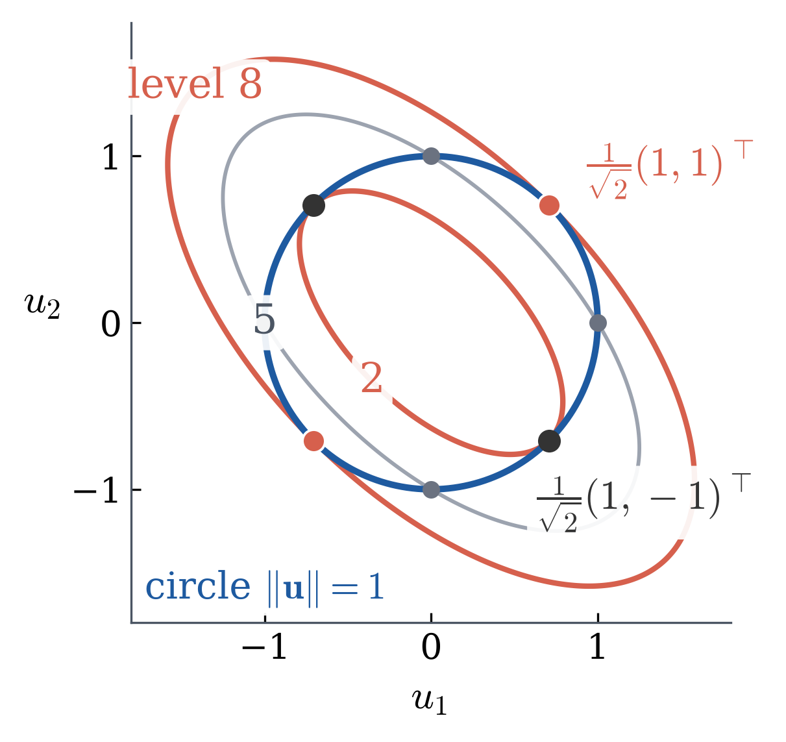
Maximize \(f(\mathbf u)=\mathbf u^\top S\mathbf u=5u_1^2+6u_1u_2+5u_2^2\) subject to \(\mathbf u^\top\mathbf u=1\).
- Contours of \(f\) are ellipses. Drawn: levels \(2\), \(5\), \(8\).
- Level \(5\) crosses the circle at \((1,0)^\top\) and \((0,1)^\top\): variance \(5\) along each quiz (Unit 3).
- Level \(8\): the highest level that still meets the circle. It touches at \(\pm\tfrac1{\sqrt2}(1,1)^\top\).
- Level \(2\): the lowest. It touches at \(\pm\tfrac1{\sqrt2}(1,-1)^\top\).
The Lagrangian of Unit 3’s problem gives the eigenvector equation
Step 1 (MML (10.11)): \(\;\mathcal L(\mathbf u,\lambda)=\mathbf u^\top S\mathbf u+\lambda\,(1-\mathbf u^\top\mathbf u)\).
Step 2: the derivatives
- \(d(\mathbf u^\top S\mathbf u)/d\mathbf u=2\,\mathbf u^\top S\) — L12 Rule 2: \(d(\mathbf w^\top A\mathbf w)/d\mathbf w=2\,\mathbf w^\top A\), \(A\) symmetric
- \(d(\mathbf u^\top\mathbf u)/d\mathbf u=d(\mathbf u^\top I\mathbf u)/d\mathbf u=2\,\mathbf u^\top\) — Rule 2 with \(A=I\)
- \(\dfrac{d\mathcal L}{d\mathbf u}=2\,\mathbf u^\top S-2\lambda\,\mathbf u^\top,\qquad\dfrac{\partial\mathcal L}{\partial\lambda}=1-\mathbf u^\top\mathbf u\) — MML (10.12)
Set them to zero
- \(\mathbf u^\top S=\lambda\,\mathbf u^\top\); transpose, using \(S^\top=S\): \(\;S\mathbf u=\lambda\,\mathbf u\) — MML (10.13)
- \(\mathbf u^\top\mathbf u=1\) — MML (10.14)
The largest variance is the largest eigenvalue
Candidates: \(S\mathbf u=\lambda\mathbf u\) and \(\mathbf u^\top\mathbf u=1\), with \(S=\begin{bmatrix}5&3\\3&5\end{bmatrix}\).
- Step 3, solve (L07): \(\det(S-\lambda I)=(5-\lambda)^2-9=0\), so \(\lambda=8\) or \(\lambda=2\).
- Step 4, compare. The value at a candidate (MML (10.15)): \(\;\mathbf u^\top S\mathbf u=\mathbf u^\top(\lambda\mathbf u)=\lambda\,\mathbf u^\top\mathbf u=\lambda\).
- So comparing candidates = comparing eigenvalues.
| \(\lambda\) | unit eigenvectors (candidates) | \(\mathbf u^\top S\mathbf u\) |
|---|---|---|
| \(8\) | \(\pm\tfrac1{\sqrt2}(1,1)^\top\) | \(8\), largest |
| \(2\) | \(\pm\tfrac1{\sqrt2}(1,-1)^\top\) | \(2\), smallest |
Theorem 2 two ways: Unit 3’s algebra and today’s calculus
Theorem 2 (Unit 3): for every unit \(\mathbf u\), \(\;\lambda_2\le\mathbf u^\top S\mathbf u\le\lambda_1\); the upper bound is reached at the unit eigenvectors for \(\lambda_1\), the lower at those for \(\lambda_2\).
| Unit 3 (L08): algebra | L17: calculus | |
|---|---|---|
| starts from | an orthogonal pair of unit eigenvectors (L07) | the problem itself |
| key step | \(\mathbf u^\top S\mathbf u=\lambda_1c_1^2+\lambda_2c_2^2\), a weighted average | \(d\mathcal L/d\mathbf u=\mathbf 0^\top\) gives \(S\mathbf u=\lambda\mathbf u\) |
| tools | orthogonality, Pythagoras | Rule 2, the Lagrange condition |
| answer | largest \(\lambda_1=8\) at \(\pm\tfrac1{\sqrt2}(1,1)^\top\) | the same |
- The calculus route does not need the eigenvectors in advance: the eigenvector equation comes out of it.
- Both routes work with \(d\) features: Unit 3’s with \(d\) terms instead of two, today’s because Rule 2 holds for every \(d\).
Your turn: the point on a line closest to the origin
- (a) Write the Lagrangian \(\mathcal L(x,y,\lambda)\).
- (b) Set its three partial derivatives to zero.
- (c) Solve for \(x\), \(y\), \(\lambda\). Why is the candidate the minimum?
- (d) The squared distance there? Is the segment from the origin to your point perpendicular to the line?
- (a) \(\mathcal L=x^2+y^2+\lambda\,(5-x-2y)\)
- (b) \(2x-\lambda=0,\quad 2y-2\lambda=0,\quad 5-x-2y=0\)
- (c) \(x=\tfrac\lambda2\), \(y=\lambda\); then \(\tfrac\lambda2+2\lambda=5\), so \(\lambda=2\): the point \((1,2)^\top\).
- Only one candidate, and \(f\) grows without bound far along the line: it is the minimum.
- (d) \(f=1+4=5\). The line runs along \((2,-1)^\top\), and \((1,2)^\top\cdot(2,-1)^\top=0\): perpendicular, L03’s projection picture.
L17 takeaways (1 of 2): the Lagrange condition
- Constrained problem: maximize or minimize \(f(\mathbf x)\) subject to \(g(\mathbf x)=c\) (MML §7.2). [MASTER]
- Setting \(\nabla f=\mathbf 0^\top\) is not enough: the best feasible point need not be flat.
- At a best point, the contour of \(f\) touches the curve \(g=c\): [MASTER]
\[\nabla f=\lambda\,\nabla g,\qquad g=c\qquad(f,g\text{ continuously differentiable},\ \nabla g\neq\mathbf 0^\top).\]
- Proof: along the curve, the slope of \(f\) is \(0\) and \(g\) does not change.
- The condition gives candidates; compare \(f\) at each. [MASTER]
L17 takeaways (2 of 2): the Lagrangian, and Unit 3’s promise kept
- Lagrangian \(\mathcal L(\mathbf x,\lambda)=f(\mathbf x)+\lambda\,\big(c-g(\mathbf x)\big)\) (MML (7.20), (10.11)). [MASTER]
- Setting its derivatives to zero gives both equations of the condition.
- Maximize \(\mathbf u^\top S\mathbf u\) subject to \(\norm{\mathbf u}=1\): [MASTER]
- Rule 2 gives \(S\mathbf u=\lambda\mathbf u\), and the value at a candidate is \(\lambda\).
- Largest variance = largest eigenvalue: \(8\), along \(\tfrac1{\sqrt2}(1,1)^\top\).
L18 — Regularization
Reading:
- MML §8.2.3, pp.262–263: Example 8.3, eq. (8.12), regularized least squares.
- MML §9.2.4, pp.302–303: eq. (9.32), the loss; eq. (9.34), its solution.
- Optional: MML §9.2.2, pp.298–300, Figure 9.6: training error vs. test error.
Plan:
- The problem: nearly dependent columns give huge, unstable weights.
- The fix: add \(\lambda\lVert \mathbf w\rVert^2\) to the error — ridge regression.
- Solve it with L12’s two rules: \((X^\top X+\lambda I)\mathbf w=X^\top\mathbf y\).
- On our data: the weights shrink.
- How big should \(\lambda\) be? Training error cannot decide.
Recall L06: a tiny change in the data, a big change in the weights
L06’s two systems, written with weights \(w_1,w_2\): two data points, two features.
\[X_1=\begin{bmatrix}1&1\\1&\mathbf{0.999}\end{bmatrix},\qquad X_2=\begin{bmatrix}1&1\\1&\mathbf{1.001}\end{bmatrix},\qquad \mathbf y=\begin{bmatrix}2\\1.998\end{bmatrix}\]| Data | Entry \((2,2)\) of \(X\) | Weights: solve \(X\mathbf w=\mathbf y\) |
|---|---|---|
| \(X_1\) | \(0.999\) | \(\mathbf w=(0,\ 2)^\top\) |
| \(X_2\) | \(1.001\) | \(\mathbf w=(4,\ -2)^\top\) |
- The data changed by \(0.002\). The weights changed by \(4\), and \(w_2\) changed sign.
- L06’s °C/°F data: one reading moved by \(0.1^\circ\); the Celsius weight went from \(+0.10\) to \(-1.19\). The predictions barely moved.
Why: the two columns of \(X_1\) are almost the same
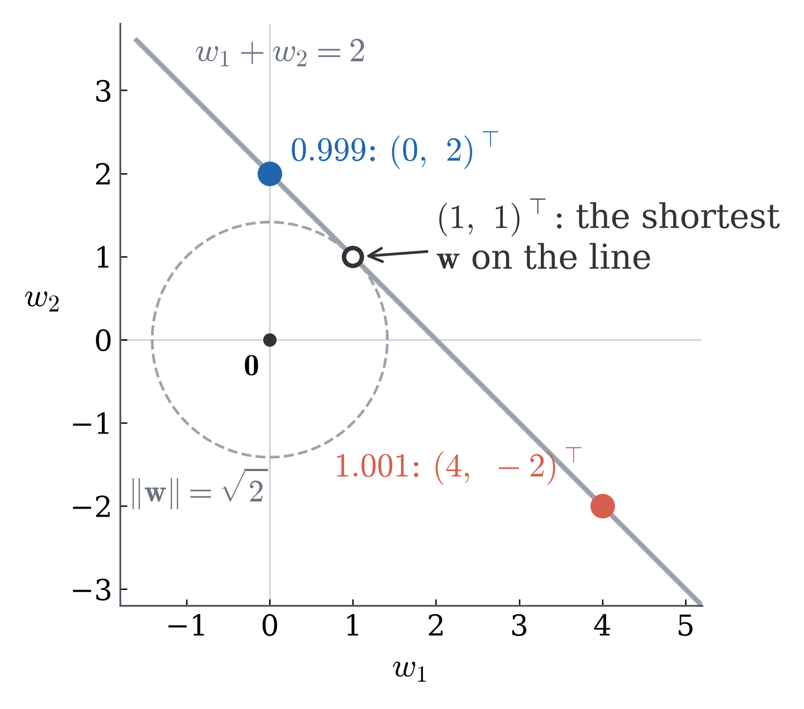
- Columns of \(X_1\): \(\mathbf c_1=(1,1)^\top\), \(\mathbf c_2=(1,\,0.999)^\top\).
- So \(X_1\mathbf w=w_1\mathbf c_1+w_2\mathbf c_2\approx(w_1+w_2)\,(1,1)^\top\).
- The data fix the sum \(w_1+w_2\approx2\) (the gray line).
- They barely fix the split between \(w_1\) and \(w_2\): only the \(0.001\) decides it.
- Both answers are on the line: \(0+2=2\), \(\;4+(-2)=2\).
- L08: \((1,-1)^\top\) is almost the eigenvector of \(X^\top X\) with eigenvalue \(\approx0\) — the direction the data say almost nothing about. [UNDERSTAND]
Three weight vectors that fit \(X_1\) almost equally well
Data \(X_1=\left[\begin{smallmatrix}1&1\\1&0.999\end{smallmatrix}\right]\), \(\mathbf y=(2,\,1.998)^\top\); residual \(\mathbf r=\mathbf y-X_1\mathbf w\), \(\;\mathrm{SSE}=\lVert \mathbf r\rVert^2\).
| \(\mathbf w\) | \(\mathbf r\) | \(\mathrm{SSE}\) | length\(^2\) \(\lVert \mathbf w\rVert^2\) |
|---|---|---|---|
| \((0,\ 2)^\top\) | \((0,\ 0)^\top\) | \(0\) | \(4\) |
| \((4,\ -2)^\top\) | \((0,\ -0.004)^\top\) | \(0.000016\) | \(20\) |
| \((1,\ 1)^\top\) | \((0,\ -0.001)^\top\) | \(0.000001\) | \(2\) |
- Every \(\mathrm{SSE}\) is below \(0.00002\): the data cannot tell these apart.
- \((4,-2)^\top\) uses two large weights that cancel: \(4-2=2\).
- \((1,1)^\top\) is the shortest point on the line \(w_1+w_2=2\) (the circle on the previous figure).
What fails: training error alone cannot choose among them.
What we need: a second preference — among nearly tied fits, prefer the shorter weight vector.
Ridge regression: the error plus a penalty on the weights
Two preferences, one number to minimize: fit the data, and keep the weights short.
\[\underbrace{\lVert \mathbf y-X\mathbf w\rVert^2}_{\text{fit the data}}\;+\;\underbrace{\lambda\lVert \mathbf w\rVert^2}_{\text{pay for large weights}}\]- MML’s names: \(\lVert \mathbf y-X\mathbf w\rVert^2=\mathrm{SSE}(\mathbf w)\) is the data-fit term; \(\lambda\lVert \mathbf w\rVert^2\) is the regularizer (penalty term).
- \(\lambda\), the regularization parameter: the price of one unit of \(\lVert \mathbf w\rVert^2\).
- \(\lambda=0\): \(E_0=\mathrm{SSE}\), the error of L09–L12.
- MML (8.12) puts \(\tfrac1N\) in front of the data-fit term; (9.32) does not. We follow (9.32).
The penalty decides between the three: \(\lambda=0.01\)
Data \(X_1\), \(\mathbf y\) as before. \(\;E_{0.01}(\mathbf w)=\mathrm{SSE}(\mathbf w)+0.01\,\lVert \mathbf w\rVert^2\).
| \(\mathbf w\) | \(\mathrm{SSE}\) | \(0.01\,\lVert \mathbf w\rVert^2\) | \(E_{0.01}\) |
|---|---|---|---|
| \((0,\ 2)^\top\) | \(0\) | \(0.04\) | \(0.04\) |
| \((4,\ -2)^\top\) | \(0.000016\) | \(0.2\) | \(0.200016\) |
| \((1,\ 1)^\top\) | \(0.000001\) | \(0.02\) | \(0.020001\) |
- The \(\mathrm{SSE}\) column is almost all zeros; the penalty column decides.
- Of these three, \((1,1)^\top\) has the smallest \(E_{0.01}\).
Step 1: write \(E_\lambda\) in L12’s form and differentiate
- L12: \(\;\mathrm{SSE}(\mathbf w)=\mathbf w^\top X^\top X\mathbf w-2\,\mathbf w^\top X^\top\mathbf y+\mathbf y^\top\mathbf y\).
- The penalty: \(\;\lambda\lVert \mathbf w\rVert^2=\mathbf w^\top(\lambda I)\,\mathbf w\). Add, and collect the two quadratic pieces:
| Piece | Rule (MML p.158) | Its derivative |
|---|---|---|
| \(\mathbf w^\top A\mathbf w\) | Rule 2, (5.107): \(d(\mathbf w^\top A\mathbf w)/d\mathbf w=2\,\mathbf w^\top A\), \(A\) symmetric | \(2\,\mathbf w^\top(X^\top X+\lambda I)\) |
| \(2\,\mathbf w^\top X^\top\mathbf y=2\,\mathbf b^\top\mathbf w\), \(\mathbf b=X^\top\mathbf y\) | Rule 1, (5.105): \(d(\mathbf b^\top\mathbf w)/d\mathbf w=\mathbf b^\top\) | \(2\,\mathbf b^\top=2\,\mathbf y^\top X\) |
| \(\mathbf y^\top\mathbf y\) | no \(\mathbf w\) | \(0\) |
- The penalty adds \(2\lambda\mathbf w^\top\): Calculus 1’s \((\lambda w^2)'=2\lambda w\), once per weight.
Step 2: set \(\nabla E_\lambda\) to zero — the ridge normal equation
\(\nabla E_\lambda=2\,\mathbf w^\top(X^\top X+\lambda I)-2\,\mathbf y^\top X\).
\[\begin{aligned} &\nabla E_\lambda=\mathbf 0^\top\\ \overset{(1)}{\iff}\;&\mathbf w^\top(X^\top X+\lambda I)=\mathbf y^\top X&&\text{add }2\,\mathbf y^\top X\text{, divide by }2\\ \overset{(2)}{\iff}\;&(X^\top X+\lambda I)\,\mathbf w=X^\top\mathbf y&&\text{transpose both sides; }X^\top X+\lambda I\text{ is symmetric} \end{aligned}\]- \(\lambda=0\): L12’s normal equation \(X^\top X\mathbf w=X^\top\mathbf y\).
- MML (9.34), p.303: \(\boldsymbol\theta_{\text{RLS}}=(\Phi^\top\Phi+\lambda I)^{-1}\Phi^\top\mathbf y\). The book’s \(\Phi\), \(\boldsymbol\theta\) are our \(X\), \(\mathbf w\).
For \(\lambda>0\): exactly one solution, for every \(X\)
Claim. If \(\lambda>0\), the matrix \(X^\top X+\lambda I\) is invertible — even when the columns of \(X\) are dependent.
Proof. Suppose \((X^\top X+\lambda I)\mathbf v=\mathbf 0\). We show \(\mathbf v=\mathbf 0\).
- Multiply on the left by \(\mathbf v^\top\): \(\;\mathbf v^\top X^\top X\mathbf v+\lambda\,\mathbf v^\top\mathbf v=0\).
- That is \(\;\lVert X\mathbf v\rVert^2+\lambda\lVert \mathbf v\rVert^2=0\), since \(\mathbf v^\top X^\top X\mathbf v=(X\mathbf v)^\top(X\mathbf v)\).
- Both terms are \(\ge0\), so both are \(0\). With \(\lambda>0\): \(\lVert \mathbf v\rVert^2=0\), so \(\mathbf v=\mathbf 0\).
- Only \(\mathbf 0\) is sent to \(\mathbf 0\): the square matrix \(X^\top X+\lambda I\) is invertible (Unit 2).
- So the ridge normal equation has exactly one solution \(\mathbf w_\lambda=(X^\top X+\lambda I)^{-1}X^\top\mathbf y\). Compare L10: dependent columns gave a whole line of best weights.
- It is the lowest point: \(E_\lambda\) is convex (L15), and for a convex function a flat point is a global minimum. [UNDERSTAND]
On our data: solve the ridge normal equation for \(\lambda=1\)
- Data: \(\mathbf t=(0,1,2)^\top\) hours, \(\mathbf y=(1,3,2)^\top\) points; model \(\hat y=w_0+w_1t\), \(\;X=\left[\begin{smallmatrix}1&0\\1&1\\1&2\end{smallmatrix}\right]\).
- Following MML (9.32), we penalize both weights, including the intercept \(w_0\). Many software implementations do not penalize the intercept.
- From L12: \(\;X^\top X=\begin{bmatrix}3&3\\3&5\end{bmatrix}\), \(\;X^\top\mathbf y=\begin{bmatrix}6\\7\end{bmatrix}\). Without the penalty, \(\mathbf w^\ast=\left(\tfrac32,\tfrac12\right)^\top\).
- To solve: \(\;(X^\top X+\lambda I)\,\mathbf w=X^\top\mathbf y\), with \(\lambda=1\).
- The \(2\times2\) inverse (L06): \(\begin{bmatrix}a&b\\c&d\end{bmatrix}^{-1}=\dfrac1{ad-bc}\begin{bmatrix}d&-b\\-c&a\end{bmatrix}\).
What \(\lambda=1\) bought, and what it cost
Compare \(\mathbf w_{\lambda=1}\) with the unpenalized \(\mathbf w^\ast\).
\(E_1(\mathbf w)=\mathrm{SSE}(\mathbf w)+\lVert \mathbf w\rVert^2\), with \(\mathrm{SSE}(\mathbf w)=\lVert \mathbf y-X\mathbf w\rVert^2\) on our data.
| \(\mathbf w^\ast\) (\(\lambda=0\)) | \(\mathbf w_{\lambda=1}\) (\(\lambda=1\)) | |
|---|---|---|
| weights | \(\left(\tfrac32,\ \tfrac12\right)^\top\) | \(\left(1,\ \tfrac23\right)^\top\) |
| length\(^2\) \(\lVert \mathbf w\rVert^2\) | \(\tfrac52=2.5\) | \(\tfrac{13}9\approx1.44\) |
| \(\mathrm{SSE}\) | \(\tfrac32=1.5\) | \(\tfrac{17}9\approx1.89\) |
| \(E_1=\mathrm{SSE}+\lVert \mathbf w\rVert^2\) | \(4\) | \(\tfrac{10}3\approx3.33\) |
- Bought: shorter weights, \(\;2.5\to1.44\).
- Cost: a worse fit to the training data, \(\;1.5\to1.89\).
- \(E_1\) is lower at \(\mathbf w_{\lambda=1}\): ridge minimizes the sum, not \(\mathrm{SSE}\) alone.
- ⚠️ The slope \(w_1\) went up, \(\tfrac12\to\tfrac23\). Ridge shrinks the length \(\lVert \mathbf w\rVert\), not necessarily every entry.
The ridge path: \(\mathbf w_\lambda\) for every \(\lambda\)
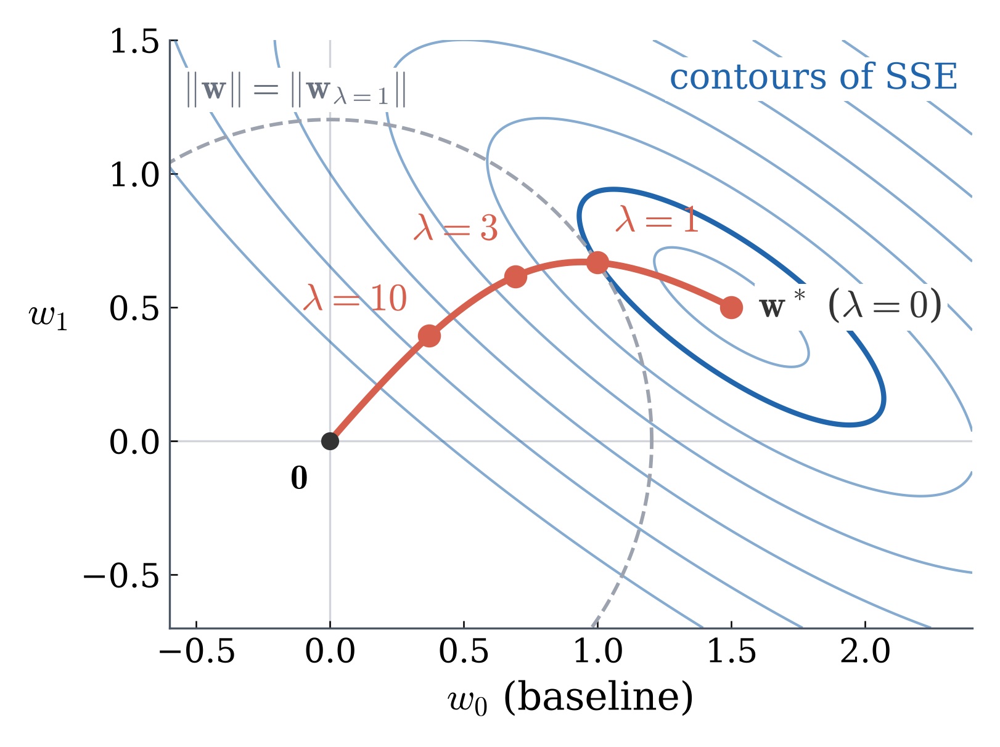
\(\lambda=1\) is one choice. To see how the answer moves with \(\lambda\), and why \(w_1\) grew, solve for every \(\lambda\).
- Red curve: \(\mathbf w_\lambda=(X^\top X+\lambda I)^{-1}X^\top\mathbf y\) on our data, \(\lambda\) from \(0\) up.
- \(\lambda=0\): \(\mathbf w^\ast\). As \(\lambda\) grows, \(\mathbf w_\lambda\) moves toward \(\mathbf 0\).
- \(\lVert \mathbf w_\lambda\rVert^2\): \(\;2.5,\ 1.44,\ 0.86\) at \(\lambda=0,1,3\).
- Large \(\lambda\): \((X^\top X+\lambda I)\mathbf w\approx\lambda\mathbf w\), so \(\mathbf w_\lambda\approx X^\top\mathbf y/\lambda\to\mathbf 0\).
- The curve first bends up: that is why the slope \(w_1\) grew from \(\tfrac12\) to \(\tfrac23\).
Why the path bends: \(\mathbf w_\lambda\) is where a contour touches a circle [UNDERSTAND]
What does the penalty mean geometrically?
- At \(\mathbf w_\lambda\): \(\nabla E_\lambda=\nabla\mathrm{SSE}+2\lambda\,\mathbf w_\lambda^\top=\mathbf 0^\top\), so \(\;\nabla\mathrm{SSE}=-2\lambda\,\mathbf w_\lambda^\top\).
- \(\nabla\big(\lVert \mathbf w\rVert^2\big)=2\,\mathbf w^\top\). So at \(\mathbf w_\lambda\) the two gradients are parallel.
- L17: parallel gradients = the contour of \(\mathrm{SSE}\) touches the circle \(\lVert \mathbf w\rVert=\lVert \mathbf w_\lambda\rVert\).
- The ridge equation gives the same tangency condition as minimizing \(\mathrm{SSE}\) over the disc \(\lVert \mathbf w\rVert\le\lVert \mathbf w_\lambda\rVert\).
- For this convex problem, that tangency picks out the best point on the disc: the best fit among all weights no longer than \(\mathbf w_\lambda\).
- On our data at \(\lambda=1\): \(\nabla\mathrm{SSE}(\mathbf w_{\lambda=1})=\begin{bmatrix}-2&-\tfrac43\end{bmatrix}=-2\begin{bmatrix}1&\tfrac23\end{bmatrix}\) ✓
Back to L06: ridge makes the weights stable
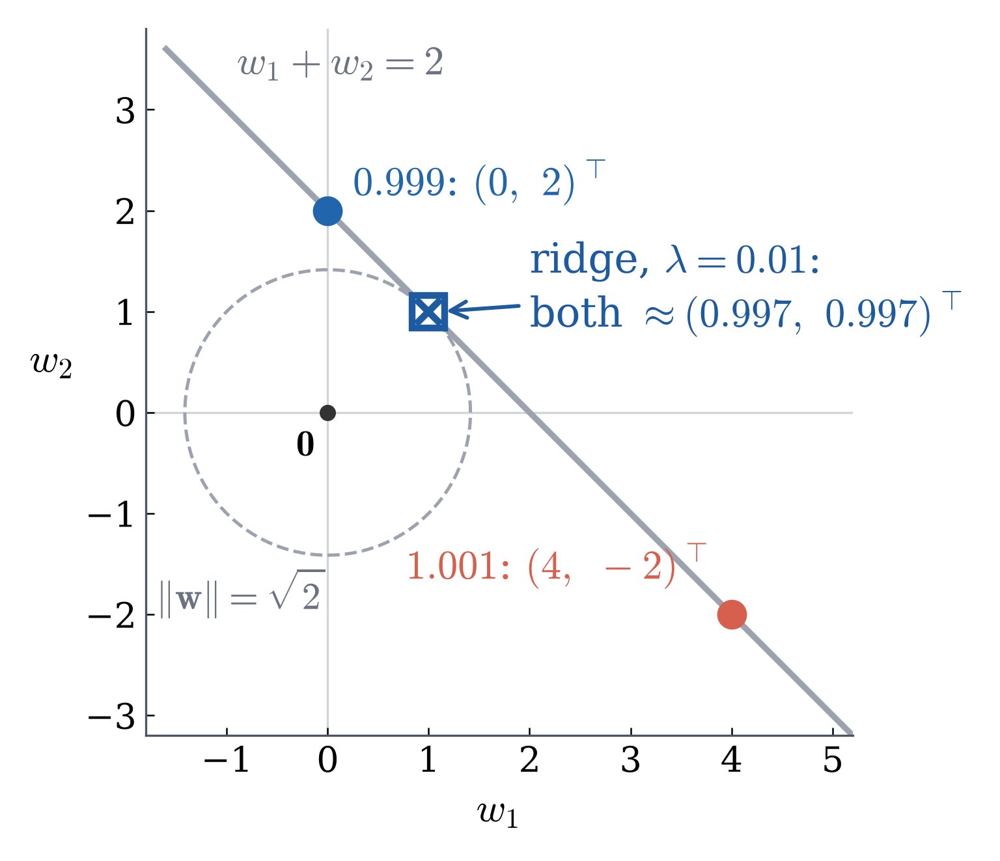
Does ridge fix L06’s unstable weights? Same data: \(X_1\) (entry \(0.999\)), \(X_2\) (entry \(1.001\)), \(\mathbf y=(2,\,1.998)^\top\).
| \(\lambda\) | weights from \(X_1\) | weights from \(X_2\) |
|---|---|---|
| \(0\) | \((0,\ 2)^\top\) | \((4,\ -2)^\top\) |
| \(0.01\) | \((0.997,\ 0.997)^\top\) | \((0.997,\ 0.997)^\top\) |
- Without ridge: data change \(0.002\), weights change \(4\).
- With \(\lambda=0.01\), the two answers agree to three decimals.
- The cost: \(\mathrm{SSE}\) rises from \(0\) to about \(0.00005\).
- L08’s reason: \(+\lambda I\) lifts the eigenvalue \(\approx0\) to \(\approx0.01\).
The lecture’s question, answered
| Question | Answer |
|---|---|
| Why can the weights blow up? | Nearly dependent columns: the data fix some combinations of the weights (here \(w_1+w_2\)) and leave others (here \(w_1-w_2\)) to noise. |
| How do we keep them stable? | Minimize \(\mathrm{SSE}+\lambda\lVert \mathbf w\rVert^2\): among weights that fit about equally well, ridge takes a short one. |
| How do we compute it? | Solve \((X^\top X+\lambda I)\mathbf w=X^\top\mathbf y\): one solution for every \(X\), when \(\lambda>0\). |
How large should \(\lambda\) be?
Our data, \(\mathbf w_\lambda=(X^\top X+\lambda I)^{-1}X^\top\mathbf y\):
| \(\lambda\) | \(\mathbf w_\lambda\) | length\(^2\) \(\lVert \mathbf w_\lambda\rVert^2\) | training \(\mathrm{SSE}\) |
|---|---|---|---|
| \(0\) | \(\left(\tfrac32,\ \tfrac12\right)^\top\) | \(2.5\) | \(1.5\) |
| \(1\) | \(\left(1,\ \tfrac23\right)^\top\) | \(1.44\) | \(1.89\) |
| \(10\) | \(\approx(0.37,\ 0.39)^\top\) | \(0.29\) | \(6.11\) |
- \(\lambda=0\): the best training fit, but the weights can be unstable (L06).
- Larger \(\lambda\): shorter, stabler weights; a worse (or equal) training fit.
- Very large \(\lambda\): \(\mathbf w_\lambda\to\mathbf 0\), and the model ignores the data.
- So the training \(\mathrm{SSE}\) cannot choose \(\lambda\): it always prefers \(\lambda=0\).
- In practice: choose \(\lambda\) by the error on held-out data, data kept aside from fitting (MML §8.2.4, p.263). [EXPLORE]
- MML Figure 9.6, p.300: training error keeps falling as the model gets more flexible; error on new data falls, then rises. Unit 6 explains why, with probability.
L18 takeaways (1 of 2): the problem and the fix
- Nearly dependent columns: the data fix some combinations of the weights and leave others to noise, so the weights can be huge and swing with tiny changes in the data. [UNDERSTAND]
- Ridge regression (MML (9.32), p.302): minimize \(E_\lambda(\mathbf w)=\lVert \mathbf y-X\mathbf w\rVert^2+\lambda\lVert \mathbf w\rVert^2\), \(\lambda\ge0\). [MASTER]
- data-fit term + regularizer; \(\lambda\) is the regularization parameter.
- \(\nabla E_\lambda=-2\,(\mathbf y-X\mathbf w)^\top X+2\lambda\,\mathbf w^\top\), by L12’s Rule 1 and Rule 2. [MASTER]
- Its flat point solves \((X^\top X+\lambda I)\mathbf w=X^\top\mathbf y\) (MML (9.34), p.303). [MASTER]
- For \(\lambda>0\) exactly one solution, for every \(X\): \(\lVert X\mathbf v\rVert^2+\lambda\lVert \mathbf v\rVert^2=0\Rightarrow\mathbf v=\mathbf 0\).
L18 takeaways (2 of 2): shrinkage and the choice of \(\lambda\)
- Our data: \(\lambda=1\) gives \(\mathbf w_{\lambda=1}=\left(1,\tfrac23\right)^\top\); \(\lVert \mathbf w\rVert^2\) falls \(2.5\to1.44\), \(\mathrm{SSE}\) rises \(1.5\to1.89\). [MASTER]
- Larger \(\lambda\), shorter \(\mathbf w_\lambda\); \(\mathbf w_\lambda\to\mathbf 0\). Ridge shrinks the length, not every entry. [MASTER]
- The ridge equation is the tangency condition for minimizing \(\mathrm{SSE}\) over the disc \(\lVert \mathbf w\rVert\le\lVert \mathbf w_\lambda\rVert\) (contour touches circle, L17); for this convex problem it picks out the best fit on that disc. [UNDERSTAND]
- Training \(\mathrm{SSE}\) never falls as \(\lambda\) grows, so it cannot choose \(\lambda\); in practice \(\lambda\) is chosen by the error on held-out data. [EXPLORE]
L19 — Stopping Criteria and Conditioning
Reading:
- MML §7.1, p.228: eq. (7.6), gradient descent
- MML §7.1, p.229: Remark on poorly conditioned problems (Figure 7.3); §7.1.1, step-size
- MML §7.1.1, p.230: Remark, the condition number
- MML §10.6, p.336: step 2, standardization
The plan:
- When should gradient descent stop? Three stopping rules.
- Why is it sometimes very slow? The eigenvalues of \(X^\top X\), the condition number \(\kappa(X^\top X)\).
- When the cause is a feature’s units: standardize the feature.
Where L16 left us: gradient descent on our data
Data: \(\mathbf t=(0,1,2)^\top\) hours, \(\;\mathbf y=(1,3,2)^\top\) points, model \(\hat y=w_0+w_1t\).
- \(\mathrm{SSE}(\mathbf w)=3w_0^2+6w_0w_1+5w_1^2-12w_0-14w_1+14\)
- \(\nabla\mathrm{SSE}(\mathbf w)=\begin{bmatrix}6w_0+6w_1-12&6w_0+10w_1-14\end{bmatrix}\), a row
- Gradient descent (MML (7.6), p.228): \(\;\mathbf w_{k+1}=\mathbf w_k-\gamma\,\big(\nabla\mathrm{SSE}(\mathbf w_k)\big)^\top\), \(\gamma=0.1\), \(\mathbf w_0=(0,0)^\top\)
| step \(k\) | \(\mathbf w_k\) | \(\mathrm{SSE}(\mathbf w_k)\) |
|---|---|---|
| \(0\) | \((0,\,0)^\top\) | \(14\) |
| \(1\) | \((1.2,\,1.4)^\top\) | \(4.2\) |
| \(2\) | \((0.84,\,0.68)^\top\) | \(2.256\) |
| \(3\) | \((1.128,\,0.896)^\top\) | \(\approx1.815\) |
The best model (L10): \(\mathbf w^\ast=(1.5,\,0.5)^\top\), \(\;\mathrm{SSE}(\mathbf w^\ast)=1.5\).
The loop gets close to \(\mathbf w^\ast\), but does not land on it
Gradient descent on our \(\mathrm{SSE}\), \(\gamma=0.1\), from \((0,0)^\top\); best: \(\mathbf w^\ast=(1.5,0.5)^\top\), \(\mathrm{SSE}=1.5\).
| step \(k\) | \(\mathbf w_k\) | \(\mathrm{SSE}(\mathbf w_k)\) | \(\mathrm{SSE}(\mathbf w_k)-1.5\) |
|---|---|---|---|
| \(5\) | \((1.2115,\,0.7318)^\top\) | \(1.6171\) | \(0.12\) |
| \(10\) | \((1.3800,\,0.5862)^\top\) | \(1.5183\) | \(0.018\) |
| \(20\) | \((1.4808,\,0.5138)^\top\) | \(1.50047\) | \(0.00047\) |
| \(40\) | \((1.4995,\,0.5004)^\top\) | \(1.5000003\) | \(0.0000003\) |
- The gap to the best error shrinks every step, but it is never \(0\).
- The loop does not know \(\mathbf w^\ast\) or \(1.5\). If it did, there would be nothing to compute.
What the loop can compute at step \(k\)
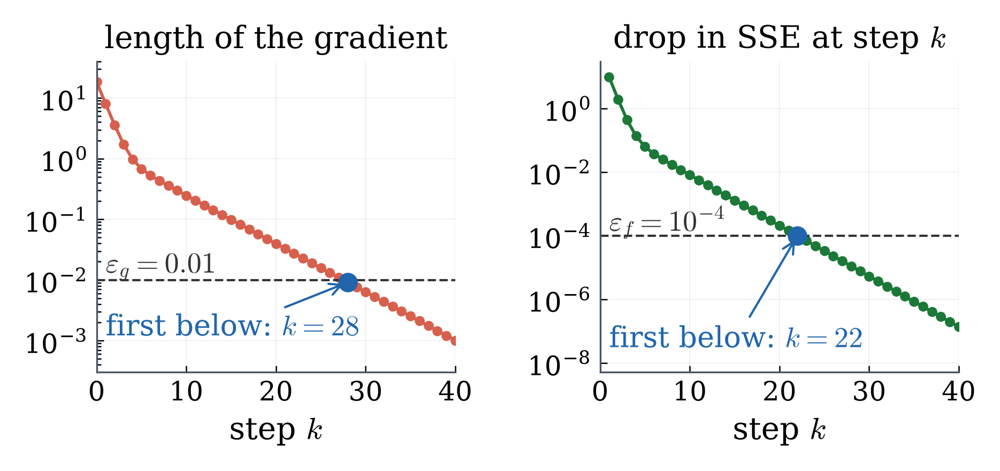
Gradient descent on our \(\mathrm{SSE}\), \(\gamma=0.1\).
- The length of the gradient, \(\norm{(\nabla\mathrm{SSE}(\mathbf w_k))^\top}\).
It is \(0\) at \(\mathbf w^\ast\) (L09). - The drop in error,
\(\mathrm{SSE}(\mathbf w_{k-1})-\mathrm{SSE}(\mathbf w_k)\). - The step count \(k\).
- On our data the first two shrink steadily.
- Dashed lines: possible cut-offs.
Stopping rules [MASTER]
- gradient small: \(\;\norm{(\nabla f(\mathbf w_k))^\top}<\varepsilon_g\)
- error barely changing: \(\;\big|f(\mathbf w_k)-f(\mathbf w_{k-1})\big|<\varepsilon_f\)
- step limit: \(\;k=K_{\max}\)
- Rule 2 uses \(|\cdot|\): with too large a \(\gamma\) the error can go up (L16).
- MML p.228 says only that, for a suitable \(\gamma\), \(f(\mathbf w_0)\ge f(\mathbf w_1)\ge\cdots\) converges. When to stop is a choice we make.
Why each rule, and when it can mislead
| rule | why it makes sense | it can mislead when |
|---|---|---|
| 1. gradient small | \(\nabla\mathrm{SSE}=\mathbf 0\) at \(\mathbf w^\ast\) (L09): nearly flat \(\Rightarrow\) nearly there | the valley is long and nearly flat (Part 2) |
| 2. error barely changing | more steps would buy almost nothing | progress is slow, not finished (Part 3) |
| 3. step limit | the loop always ends, even if \(\gamma\) is too large (L16) | always possible: it stops wherever it is |
- Use all three, then look at which rule stopped the loop.
- Stopped by rule 3: the loop did not converge; something is wrong (\(\gamma\), or the problem itself: Part 2).
Our data: which rule stops first?
Gradient descent on our \(\mathrm{SSE}\), \(\gamma=0.1\), from \((0,0)^\top\). Rules: \(\varepsilon_g=0.01\), \(\;\varepsilon_f=10^{-4}\), \(\;K_{\max}=1000\).
| rule | first step where it holds | \(\mathbf w_k\) | \(\mathrm{SSE}(\mathbf w_k)\) |
|---|---|---|---|
| 2. error barely changing | \(k=22\) | \((1.4867,\,0.5096)^\top\) | \(1.50022\) |
| 1. gradient small | \(k=28\) | \((1.4956,\,0.5032)^\top\) | \(1.50002\) |
| 3. step limit | \(k=1000\) | — | — |
- Rule 2 fires first: stop at \(k=22\).
- Trained model: \(\hat y\approx1.487+0.510\,t\). Best model: \(\hat y=1.5+0.5\,t\).
- Its \(\mathrm{SSE}\) is \(0.0002\) above the best \(1.5\): good enough.
Why 22 steps? The path zigzags
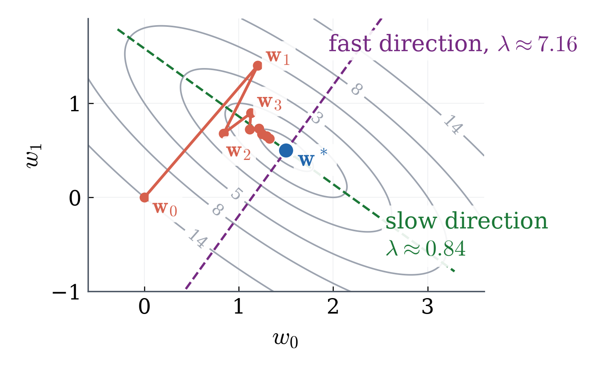
Stopping tells us when to quit; it does not explain why it took 22 steps. Now: why is the loop slow?
- Figure, \(\gamma=0.1\): \(\mathbf w_0\to\mathbf w_1\to\mathbf w_2\to\mathbf w_3\) jumps across the valley and back.
- L11: the fastest way down, \(-(\nabla\mathrm{SSE})^\top\), does not point at the bottom.
- Then it creeps along the long axis of the ellipses.
The ellipses have a long and a short axis (dashed). Does one step shrink the gap \(\mathbf w_k-\mathbf w^\ast\) by a different factor along each axis?
Two parameters: one factor per eigenvector of \(X^\top X\) [UNDERSTAND]
L16: on \(f(w)=w^2\), \(w_{k+1}=(1-2\gamma)\,w_k\). Now: \(\;\mathrm{SSE}(\mathbf w)=\norm{\mathbf y-X\mathbf w}^2\), \(\mathbf w_{k+1}=\mathbf w_k-\gamma\,\big(\nabla\mathrm{SSE}(\mathbf w_k)\big)^\top\).
- \(f(w)=w^2\) is the case \(\lambda=1\): it is \(\norm{0-1\cdot w}^2\), an \(\mathrm{SSE}\) with \(X^\top X=1\) and \(w^\ast=0\).
- \(X^\top X\) is symmetric, so it has an orthogonal eigenbasis \(\mathbf v_1,\mathbf v_2\) (Unit 3).
Write \(\mathbf w_k-\mathbf w^\ast=c_1\mathbf v_1+c_2\mathbf v_2\): each part gets its own factor \(1-2\gamma\lambda_i\).
Why: the gradient is \(2X^\top X\) times the gap \(\mathbf w-\mathbf w^\ast\)
Claim: if \(X^\top X\mathbf v=\lambda\mathbf v\) and \(\mathbf w_k-\mathbf w^\ast=c\,\mathbf v\), then \(\mathbf w_{k+1}-\mathbf w^\ast=(1-2\gamma\lambda)\,c\,\mathbf v\).
- L12: \(\;\big(\nabla\mathrm{SSE}(\mathbf w)\big)^\top=2\,(X^\top X\mathbf w-X^\top\mathbf y)\)
- Normal equation \(X^\top X\mathbf w^\ast=X^\top\mathbf y\): \(\big(\nabla\mathrm{SSE}(\mathbf w)\big)^\top=2\,X^\top X\,(\mathbf w-\mathbf w^\ast)\)
- One step, minus \(\mathbf w^\ast\): \(\mathbf w_{k+1}-\mathbf w^\ast=(\mathbf w_k-\mathbf w^\ast)-2\gamma\,X^\top X\,(\mathbf w_k-\mathbf w^\ast)\)
- Put \(\mathbf w_k-\mathbf w^\ast=c\,\mathbf v\), use \(X^\top X\mathbf v=\lambda\mathbf v\): \(\mathbf w_{k+1}-\mathbf w^\ast=c\,\mathbf v-2\gamma\lambda\,c\,\mathbf v=(1-2\gamma\lambda)\,c\,\mathbf v\)
Our data: the two eigenvectors of \(X^\top X\)
\(X^\top X=\begin{bmatrix}3&3\\3&5\end{bmatrix}\)
- Unit 3: \(\det(X^\top X-\lambda I)=\lambda^2-8\lambda+6=0\)
- \(\lambda=4\pm\sqrt{10}\): \(\approx7.16\) and \(\approx0.84\)
- Factors \(1-2\gamma\lambda\) at \(\gamma=0.1\):
| \(\lambda\) | eigenvector | factor |
|---|---|---|
| \(\approx7.16\) | \(\approx(0.585,\,0.811)^\top\) | \(\approx-0.43\) |
| \(\approx0.84\) | \(\approx(0.811,\,-0.585)^\top\) | \(\approx0.83\) |
- \(-0.43\): flips side each step, shrinks fast: the zigzag.
- \(0.83\): same side, only \(17\%\) closer per step: the slow creep.
How large can \(\gamma\) be? The largest eigenvalue decides [UNDERSTAND]
Along an eigenvector of \(X^\top X\) with eigenvalue \(\lambda\): factor \(1-2\gamma\lambda\) per step.
- A part shrinks only if \(|1-2\gamma\lambda|<1\), that is \(0<\gamma<1/\lambda\).
- Both parts must shrink: \(\;\gamma<1/\lambda_{\max}\).
- Our data: \(1/(4+\sqrt{10})\approx0.140\).
- \(\gamma=0.1\): converges.
- \(\gamma=0.15\): fast factor \(1-0.3\,(4+\sqrt{10})\approx-1.15\): diverges, as in L16.
- \(\gamma<1/(2\lambda_{\max})\approx0.070\): fast factor positive, no zigzag.
- But the slow factor \(1-2\gamma\lambda_{\min}\) is then above \(1-\lambda_{\min}/\lambda_{\max}\approx0.88\): even slower.
How slow? The condition number of \(X^\top X\) [UNDERSTAND]
What fails: the \(\lambda_{\min}\) direction then crawls: its factor is \(1-2\gamma\lambda_{\min}>1-2\lambda_{\min}/\lambda_{\max}\), near \(1\) when \(\lambda_{\min}/\lambda_{\max}\) is small, whatever \(\gamma\) we pick.
What we need: one number comparing the direction that caps \(\gamma\) (\(\lambda_{\max}\)) with the direction that crawls (\(\lambda_{\min}\)).
- MML p.230 uses singular values, \(\sigma_{\max}/\sigma_{\min}\). For the symmetric \(X^\top X\) they are its eigenvalues; for the data matrix \(X\), their square roots, so \(\kappa(X)=\sqrt{\kappa(X^\top X)}\) (MML p.127).
- Slow factor \(>1-2/\kappa(X^\top X)\): a simple bound, not the best possible rate. Large \(\kappa(X^\top X)\) = slow.
What a large \(\kappa(X^\top X)\) looks like: long, thin contours [UNDERSTAND]
Our data: \(\kappa(X^\top X)=\dfrac{4+\sqrt{10}}{4-\sqrt{10}}\approx8.55\).
- L10: \(\;\mathrm{SSE}(\mathbf w)=1.5+\norm{X(\mathbf w-\mathbf w^\ast)}^2\)
- Along a unit eigenvector, \(\mathbf w-\mathbf w^\ast=c\,\mathbf v\):
\(\norm{X c\mathbf v}^2=c^2\,\mathbf v^\top X^\top X\mathbf v=\lambda c^2\) - Contour \(\mathrm{SSE}=1.5+d\): reached at \(c=\sqrt{d/\lambda}\).
Small \(\lambda\): far out. Large \(\lambda\): close in. - Long axis / short axis \(=\sqrt{\kappa(X^\top X)}\approx2.92\).
- MML p.229: a long, thin valley is a poorly conditioned problem, where gradient descent zigzags.
Your turn: a different \(X^\top X\)
- (a) For which step sizes \(\gamma\) does gradient descent converge?
- (b) What is \(\kappa(X^\top X)\)?
- (c) At \(\gamma=0.1\): the factor along each eigenvector. Which direction zigzags?
- (d) Along which eigenvector do the contour ellipses have their long axis? Long / short = ?
- (a) \(\gamma<\tfrac1{\lambda_{\max}}=\tfrac18\)
- (b) \(\kappa(X^\top X)=\tfrac82=4\)
- (c) Along \((1,1)^\top\): \(1-0.2\cdot8=-0.6\), flips side: the zigzag. Along \((1,-1)^\top\): \(1-0.2\cdot2=0.6\).
- (d) Along \((1,-1)^\top\), the smaller eigenvalue; long / short \(=\sqrt4=2\).
The same students, time in minutes: what happens to \(\kappa(X^\top X)\)?
Is a large \(\kappa(X^\top X)\) a property of the prediction problem itself, or can our choice of units make it artificially bad?
A separate example: \(\mathbf t=(0,60,120)^\top\) minutes, \(\;\mathbf y=(1,3,2)^\top\), \(\;X=[\,\mathbf 1\ \ \mathbf t\,]\).
Same data, same best line: \(\hat y=1.5+0.5\cdot(\text{hours})=1.5+\tfrac{1}{120}\cdot(\text{minutes})\).
| hours | minutes | |
|---|---|---|
| \(X^\top X\) | \(\begin{bmatrix}3&3\\3&5\end{bmatrix}\) | \(\begin{bmatrix}3&180\\180&18000\end{bmatrix}\) |
| \(\lambda_{\max}\), \(\lambda_{\min}\) | \(\approx7.16\), \(\approx0.84\) | \(\approx18001.8\), \(\approx1.20\) |
| \(\kappa(X^\top X)\) | \(\approx8.55\) | \(\approx15003\) |
| step-size limit \(1/\lambda_{\max}\) (need \(\gamma\) below it) | \(\approx0.140\) | \(\approx0.0000556\) |
| steps to within \(0.01\) of \(\mathbf w^\ast\) | \(25\) (\(\gamma=0.1\)) | \(41{,}757\) (\(\gamma=0.00005\)) |
- Only the unit changed, and \(\kappa(X^\top X)\) went from \(\approx8.55\) to \(\approx15003\): the units alone made it bad.
- Rule 2 is fooled: it stops the minutes run at step \(7{,}786\) with \(\mathrm{SSE}\approx1.92\) (best \(1.5\)).
Removing the unit: standardize the feature [UNDERSTAND]
Goal: feature values that do not change when hours become minutes. Subtract the mean, divide by \(\sqrt{\text{variance}}\).
- Hours (\(\bar t=1,\ s^2=\tfrac23\)) and minutes (\(\bar t=60,\ s^2=2400\)) give the same
\(\mathbf z=\left(-\sqrt{1.5},\,0,\,\sqrt{1.5}\right)^\top\): standardized data are “unit free” (MML p.336). - New model \(\hat y=v_0+v_1z\), \(Z=[\,\mathbf 1\ \ \mathbf z\,]\): \(\mathbf 1^\top\mathbf 1=3\), \(\mathbf 1^\top\mathbf z=0\) (mean \(0\)), \(\mathbf z^\top\mathbf z=3\) (variance \(1\)).
So \(Z^\top Z=3I\): \(\lambda=3\) in every direction, \(\kappa(Z^\top Z)=1\). - Factor \(1-6\gamma\) in every direction: \(\gamma=\tfrac16\) lands on the best \(\mathbf v=\left(2,\ \tfrac1{\sqrt6}\right)^\top\approx(2,\ 0.408)^\top\) in one step.
Before and after standardizing
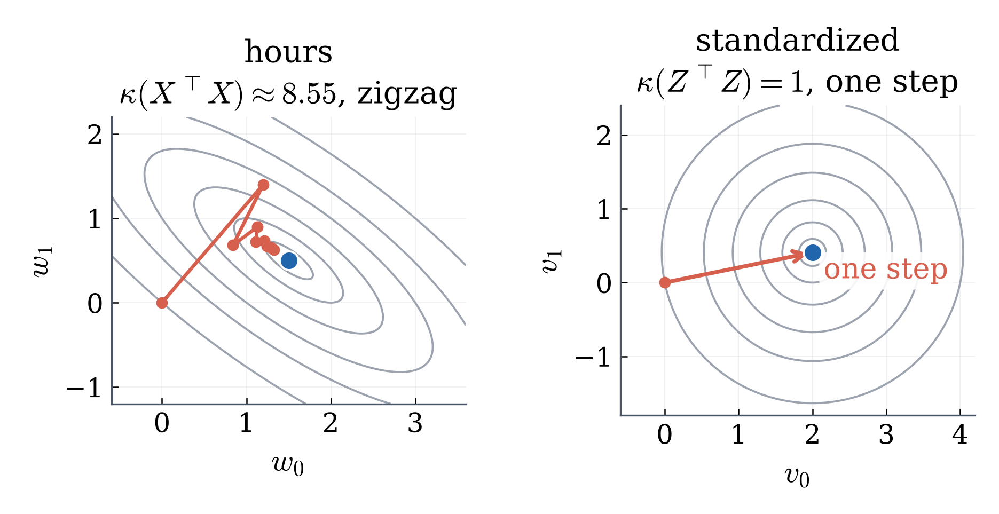
- Left, hours: \(\kappa(X^\top X)\approx8.55\)
Ellipses; \(\gamma=0.1\) zigzags, rule 2 stops it at step \(22\). - Right, standardized: \(\kappa(Z^\top Z)=1\)
Circles; \(-(\nabla\mathrm{SSE})^\top\) points straight at the bottom. - Same predictions, new parameters:
\(\hat y=2+\tfrac1{\sqrt6}\,z=1.5+0.5\,t\).
Today’s three questions, answered
| question | answer |
|---|---|
| When should gradient descent stop? | At the first step where the gradient is small, the error barely changes, or the step limit is reached. |
| Why is it sometimes very slow? | Along an eigenvector of \(X^\top X\), each step multiplies the gap \(\mathbf w_k-\mathbf w^\ast\) by \(1-2\gamma\lambda\). \(\lambda_{\max}\) caps \(\gamma\); then the \(\lambda_{\min}\) direction crawls when \(\kappa(X^\top X)=\lambda_{\max}/\lambda_{\min}\) is large (a simple bound: slow factor \(>1-2/\kappa(X^\top X)\)). |
| What can help when poor conditioning comes from the features’ scale? | Standardize the features. With one feature, \(Z^\top Z=3I\) here and \(\kappa(Z^\top Z)=1\). It does not help when two features are nearly the same column (L18). |
L19 takeaways (1 of 2): stopping rules
- Gradient descent gets close to \(\mathbf w^\ast\) but does not land on it: it needs a rule to stop. [MASTER]
- Stop at the first step where any one holds: [MASTER]
- \(\norm{(\nabla f(\mathbf w_k))^\top}<\varepsilon_g\) (gradient small)
- \(|f(\mathbf w_k)-f(\mathbf w_{k-1})|<\varepsilon_f\) (error barely changing)
- \(k=K_{\max}\) (step limit)
- Our data, \(\gamma=0.1\), \(\varepsilon_g=0.01\), \(\varepsilon_f=10^{-4}\): rule 2 stops at \(k=22\), \(\mathrm{SSE}\approx1.50022\). [MASTER]
- A small change in error does not prove we are close: slow progress also gives small changes. [UNDERSTAND]
L19 takeaways (2 of 2): conditioning
- Along an eigenvector of \(X^\top X\) (eigenvalue \(\lambda\)), one step multiplies the gap \(\mathbf w_k-\mathbf w^\ast\) by \(1-2\gamma\lambda\); L16’s \(w^2\) is \(\lambda=1\). [UNDERSTAND]
- Safe step: \(\gamma<1/\lambda_{\max}\). Condition number \(\kappa(X^\top X)=\lambda_{\max}/\lambda_{\min}\) (MML p.230); slow factor \(>1-2/\kappa(X^\top X)\), a simple bound. Large \(\kappa(X^\top X)\): long, thin contours and slow gradient descent along the \(\lambda_{\min}\) direction; a step near the limit \(1/\lambda_{\max}\) also zigzags along the \(\lambda_{\max}\) direction. [UNDERSTAND]
- Our data: \(\lambda=4\pm\sqrt{10}\), \(\;\kappa(X^\top X)\approx8.55\); in minutes, \(\approx15003\).
- Standardizing a feature, \(z_i=(t_i-\bar t)/s\), removes its unit; with one feature, \(Z^\top Z=3I\) here and \(\kappa(Z^\top Z)=1\). [UNDERSTAND]